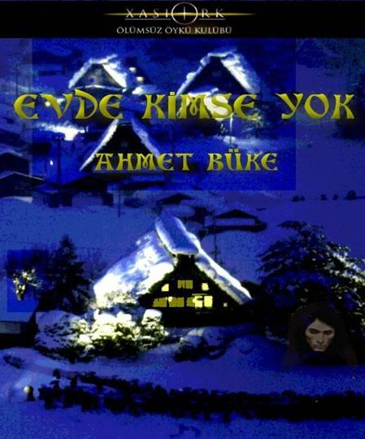
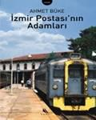
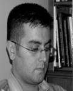

Sessizkule…
Sevgili Ahmet Büke, çekimser ve sakin görünüşünü yapıtlarıyla yalanlayan ve bizleri şaşırtan Ahmet!
Evet bizi yani Xasiork Ölümsüz Öyküler Kulübünün 2002 yılı jürisini, üç ve birbirinden güzel öyküsüyle şaşkınlığa uğratmıştı. Üyeler heyecanla birbirlerini arayıp bu yazarın kim olduğunu soruyorlardı. Kendisini daha önceden tanımıyorduk, kulübümüzün üyesi değildi ve açıkçası bazı jüri üyesi arkadaşlarım onun takma isimle yarışmaya katılmış usta bir yazar olduğuna hükmetmişlerdi.
Yarışmanın düzenleyicisi, kulübümüzün babası Orkun Uçar, derhal onun hakkında bir araştırma yaptı ve kimliğinin doğru olduğunu, İzmir’de yaşayan ve şimdiye kadar edebiyat alanında adı geçmemiş taze bir filiz olduğunu onayladı.
Öyküleri arasında hangisinin birinci olması gerektiğine oldukça güç karar verdik. Ve sonunda ödül günü gelip çattı. Ahmet’in ödül törenine gelmesini heyecanla bekliyordum. Törene eşiyle birlikte geldi. Sessiz ve donuk bir görünüşü vardı. Böyle sıcak, vurucu kelimelerin onun yüreğinden fırladığına ilk bakışta inanabilmek gerçekten zordu.
İşte onunla dost oluşumuzun başlangıcı böyle olmuştu. Sonraları yazdığı hikayeleri daha dumanı üzerinde tüterken bir “günaydın şekeri” olarak mail kutumda bulmaya başladım. Hiç şüphe yok ki O Türkiye’nin edebiyat tarihine bence Dünya çapında bir kazanç olmuştur.
İlk kitabını heyecanla ve iki yıl bekledim.
İzmir Postası’nın Adamları, usta işi, zevkle okunan, tadı damakta kalan harikulade bir ilk kitap oldu. Her satırında yazarın detayları fark etmekte ve bunları Türkçe’mizin en güzel haliyle sunumundaki başarısına hayran kalıyorsunuz. Bütün kelimeler adeta üzerinde günlerce düşünülmüş intibaı yaratacak ölçüde incelikle seçilmişler. Aynı lezzeti şimdiye kadar yalnızca Aziz Nesin ustanın öykülerinde bulabilmiştim.
Üstelik Ahmet de aynı Nesin usta gibi toplumla çok ilgili. Çevresinde olup biten hayata dair her şeyi, müthiş gözlemciliği ile fotoğrafının içine sığdırabiliyor.
Yazarın o sakin, ciddi ve mütevazı görünüşünün ardında, huzursuz, mükemmeliyetçi, sabırsız ve atak bir kişilik yer alıyor. Bence O, dağları devirmek, kusurlu her şeyi düzeltmek istiyor.
Muhtemelen günlük hayatında gerçek kendini kolayca ifade edemeyen Ahmet Büke, böyle muhteşem şeyler yaza yaza çok yakında gerçek ifade özgürlüğüne ulaşacak.
Yazarlığının en sıkı hayranı olarak, ona uzun ve verimli bir yazım hayatı diliyorum. Bir altın her yerde, eninde ve sonunda ışıkla buluşur ve gözleri kamaştıracak bir parıltı fırlatır.
Bu hep böyle olmuştur.
Sevgilerimle
Sibel Atasoy

EVDE KİMSE YOK
Ahmet Büke
EVDE “KİMSE” YOK
Güneşin ince çizgisi koridordaki halının ayak ucuna düştü önce. Dokumadaki mavi çiçekli deseni ortaya çıkartan zeminin rengi, bu ışıkla biraz daha açıldı. Aynı hizada duran, üzeri tüylü terlik tekinin burnu güneşin ilk parıltısıyla yıkanmaya başladı.
Tam o anda, bu değişimin olduğu yere çok yakın olan kapı çekildi. Merdivenlerden aşağıya acele topuk sesleri hızla indi.
Kapı kanadının geriye ittiği hava evin koridorunda belli belirsiz esti. Güneşin hattında uzanan terliğin tüyleri dalgalandı. Rüzgardaki parfüm kokusuna bulandı ortalık.
Alacağı yol uzadıkça etkisini kaybeden rüzgar, koridorun sonundaki metal sehpaya ve üzerindeki çiçeğe ulaşamadı.
Eğer ulaşsaydı belki daha çabuk uyanabilirdi. En azından sallanan dallar saatlerce süren hareketsizliğini ona hatırlatabilirdi. Ama yine de gözlerini açtı. Parfüm kokusu ona kadar gelmişti galiba.
Saksının ne zamandır kuruyan toprağının çatlağından küçük bir karınca süzüldü dışarıya. Kendi etrafında bir tur attıktan sonra tekrar yarığına girdi. Ama heyecanla geri çıktı. Adeta dört nala plastik kabın kahverengi dış ağzına doğru koşmaya başladı. Çeperi hızla tırmanıp kaydoldu.
Herhalde az sonra sehpanın tozlu camında izlerini bırakıyor olacaktı. Sehpanın gümüş kuşakları buz gibidir şimdi. Karıncanın üşüyen minik ayak uçları ancak halıya vardığında kendine gelir.
Evet işte karınca halının üzerinde yine ortaya çıktı. Uzun havların arasında görünüp kaybolup yönünü buluyordu. Saksının içinden çıksa da aslında mutfak karıncasıydı. Gittiği yön bunu gösteriyordu.
Peki neden geceyi fayansların altındaki yuvasında değil de çiçeğin dibindeki toprakta geçirmişti?
Yoksa yuvadan kovulan bir günahkar mıydı?
Belki de mutfak tezgahının üstüne düşen kek parçalarını yuvaya götürmek yerine etrafta gezinmeyi yeğlemişti.
Ne büyük günah! Kutsal yiyecek zincirini kırmak.
Oysa o, şaşmaz dakiklikte işleyen biyolojik makinenin küçük bir parçasıydı nihayetinde.
Onlar, ortalık sakinleştiğinde yani insanlar elden ayaktan kesildiğinde gözcülerin verdiği işaretle deliklerinden sökün ederler.
Fayansların altından açtıkları yoldan, nemli çimentoyu ezerek evin mikro dünyasına akarlar.
İnce çizgi haline yol alan kalabalığın tek görevi toplamaktır. Toz şekerleri, ekmek ve kek parçaları, kurumuş reçel topakları.
Serin ince yolların onlarca çatala ayrıldığı yuvada yiyeceklerin atıldığı büyük mantar tarlasına kadar kan ter içinde alınacak ne kadar uzun yolları vardır.
Kıvrımlı genlerinde yazılı kutsal şifreleri dünyaya gelmelerinin anlamını onlara belletmiştir. Tıpkı kaçınılmaz bir alın yazısı gibi. Tek başlarına bir hiç olan onlar bir araya geldiklerinde dişlileri, gıcırdayarak akan yayları ve mırıldayan devinimleriyle o muhteşem biyolojik makineyi oluştururlar.
Peki ya bu kara noktanın hikayesi neydi?
Ya yuvadan bu kadar uzak geçirilen gecenin anlamı?
Belki de ana kraliçenin yumurtalıklarındayken yanlış bir şeyler olmuştu. Hatalı bir kod. DNA’nın yanlış uzanan bir burgacı.
Önce merak etmeye başlamıştı kesinlikle. Aniden. Deli gibi yiyecek toplamaya koştururken.
“Ben ne yapıyorum?”
Mutfak tezgahının hemen altında bir bezelyenin ezilmiş bağırsaklarını taşırken tekrar sormuştu.
“Neden?”
İşte tam da bu andan itibaren evin dünyasında hiçbir şey eskisi gibi akmamış olmalı.
Soru soran bir karınca. Dünyasını çözmeye çalışan bir imalat hatası.
Diğerleri çılgınlar gibi yemek toplarken daha az çalışıp daha çok gezmeyi öğrenmiş olmalı.
Eğer programlandığınız işe daha az zaman ayırırsanız dünyanızı keşfetmeye daha çok vaktiniz olacaktır.
Kum deseni kaplamalı mutfak dolaplarının içinde, porselen çaydanlığın deliklerinde, mantar şeklindeki tuzluğun serin camında geçirilen saatler giderek uzamıştır. Mini fırının deforme olmuş kapak fitilinden içeriye sızmak, görüntüsünü büyüten metal kaşıkların içinde kendini izlemek, musluktan damlayan suyun metal lavaboda patlayışını izlemek. İşte dalga dalga etrafında büyüyen bir evren.
Karınca mutfak eşiğinden kayboldu.
Saksıdaki sessizlik hışırdayan yapraklarla yeniden bozuldu. İnce siyah ayakları üzerinde gerindi, yaylandı ve bir an yine durdu. Baştaki parfüm kokusunun havadaki son hissi de kaybolmak üzereydi.
Kanatlarını gerdi. Arka iki ayağının üzerine kaykılıp temizlenmeye başladı. İncecik ağzına götürdüğü ön ayaklarını, kıllı ensesini ve zar inceliğindeki kanatlarını bir önceki günün tozlarından ayıkladı.
Yapışkan vantuzlarını kullanarak tünediği yaprağın altına salladı kendini. İlerledi. Dertop olmuş uyuyan diğerinin yanına gitti. Etrafında döndü. En çok kokusunu seviyordu onun. İçini gıdıklayan, kasıklarını geren bu his yüzünden görünmez bir tül gibi ona bağlanıyordu.
Etrafında dolandı erkeğinin.
Günler önce tuvalet penceresinden eve girdiğinde lavabo aynasında dinlenirken görmüştü onu. Bir süre mavi kordonuyla uzanan lambanın etrafında uçmuşlardı. Havada çizdikleri düzensiz daireler, keskin dönüşler giderek hızlanmıştı. Sonunda ona yakalanmıştı. Sırtına binen ağırlığı daha fazla taşıyamadığı için karo taşlarının üzerine pervanesi bozulmuş bir uçak gibi acilen inmişlerdi.
İşte o andan itibaren evin neredeyse her yerinde düzüşmenin mutluluğuna ermişti. Kestane ağacından kitaplıkta, büyük ekran televizyonun arka kapağında, ekşi ayak kokan terliklerin içinde, parlak kağıdıyla fiyakalı tatil dergisinin kapağında sayısız kez çiftleşmişti onunla.
Şimdi bu siyah aygır nasılda masumca uyuyordu.
Erkeğinin etrafındaki dolaşmasını bitirdi. Ön ayaklarını usulca uzattı. Titretti onları. Tepkisizliğe kızdı birden. Havalandı. Yıldırım gibi koridorun göğünde uçtu. Döndü. Hızını azaltıp yumuşak bir manevrayla yaprağın altına süzüldü ve hala uyuyan erkek sineğin üzerine konuverdi. Birden yapraktan kurtuldular. Taş gibi saksının toprağına düştüler.
Ölü sineklerin önce ayakları kurur. Gövdesine batmış birer kıymık parçası gibi çatlar en ufak sarsıntıda.
Bir süre ölü erkeğin kıpırtısız vücuduna baktı. Sonra tüylü göğsüne takılmış ayak parçalarından silkinerek kurtuldu. Ardından saksıdan ayrıldı.
Koridorun göğünde anlamsızca turladı.
Hayat nasıl da değişmişti bu sabah onun için. Daha önce hiç duymadığı bir parfüm kokusuyla uyanmıştı. Sonra o sinir bozucu karıncanın acele koşuşu. Ardından biricik sevgilisinin kurumuş bedeni.
Mutfağa doğru alçaldı. Sinirli pikesini yaparken karıncanın üzerinden geçti. Döndü daha da alçalıp hızlandı. Üzerinden geçen kanat sesinden ürken karınca hareketsiz kaldı. Tehlikeli durumlarda en iyisi ölü taklidi yapmaktı.
Huzursuz bir sabah, ölü bir sevgili ardından yine hareketsiz bir karınca. Yok yok bu kadarı da fazlaydı artık. Sinirlendi. Tavana doğru yükselip bir an için havada aslı kaldı. Ardından bir külçe gibi bıraktı kendini. Hırsla karıncanın üzerine çullandı.
O sabah evin dünyasında olanlar yüzünden belki de evrenin akışı değişti. Genlerindeki farklılık yüzünden düşünmeye başlayan bir karınca belki de evrimin yeni ayağı yok oldu. Hem de sinirleri bozuk bir sinek yüzünden.
Yaptıkları onu sakinleştirmiş miydi? Hayır. Kasıklarındaki o garip sıkıntı artarak devam ediyordu.
Tekrar havalandı. Bu kez dümenini salona çevirdi.
Bozuk duvar saatinin siyah mobilyasına tüneyip içerisini izledi.
Su yeşili rahat koltuk takımının merkezine yerleştirilmiş televizyon, onun arkasında yükselen kütüphane, raflarda dizili ansiklopediler hepsi hüzün veriyordu şimdi.
Saatin hemen solundaki yemek masasına uçtu. Akşam yemeğinden kalan kirli tabak ve bardaklar hala orada duruyordu.
O anda gerçekten her şeyin değiştiğini anladı. Yalnızca kendi özel yaşamında değil, onu da içine alan evin evreni bir önceki sabahtan farklıydı.
Bir kere yemek masasını hiç kirli ve dağınık görmemişti şimdiye kadar. Hele iki kişiye ait olduğu belli dağınıklık asla olmamıştı. Bir çift tabak, çatal ve bıçak, iki kadeh. Bunların anlamı neydi?
Her sabah aynı saatte kalkan, birkaç dakika televizyon izledikten sonra çıkıp giden ve gece yarısına kadar ortalıkta görünmeyen o kel kafalı adam neredeydi acaba?
Ruj izinin sıvandığı kadehin içine girdi. Dibinde kalan şarabı yokladı ön ayaklarıyla. İçindeki garip gurultuyu yeniden hissedince havalandı.
Küçük çalışma odasına uçtu. Yarı açık kapının koluna konduğunda gördüklerine inanamadı. Şimdiye dek buraya ait olan tek sözcük, düzendi. Masanın üzerinde duran ince ekranıyla bilgisayar ve ona hemen bitişik klavyesi, uçlarından hafif eğimiyle dizili tertemiz kağıtlar, dizi dizi siyah tükenmez kalemler dünya yaratıldığından beri aynı çizgilerinde dururdu.
Oysa şimdi sanki içeride zorlu bir fırtına esmiş gibiydi.
Maun çalışma masasının tüm çekmeceleri çıkartılmış, içerisindekiler halının üzerine boca edilmişti. Deri koltuğun hemen arkasında yükselen dolabın kapakları da ardına dek açılmıştı.
Sessizce çalışan siyah kaplamalı bilgisayarın üstüne kondu. Kayan yıldızlarla dolu ekranın üzerinde yürürken vücuduna yayılan hafif elektrik kanatlarının gıdıklanmasına neden oldu. Ardından içindeki sızıyı yine duydu.
Anlaşılan bu gün ona huzur yoktu.
Kanatlandı yine. Açık dolap kapaklarından birinin içine süzüldü. Karıştırılmış kağıt kalabalığının arasında duran ayakkabı kutusuna yöneldi. Yırtılarak açılmış karton kapağın yaralı açıklığından içine girdi.
Bu soğuk demiri ilk kez hissediyordu. Tanımak istediği her nesneye yaptığı gibi dokundu ona. Kıvrımlarını hissetti, yayılan keskin kokusunu anlamaya çalıştı.
Tırtırlı kabzanın etrafını dolandı. Aletin yuvarlak karnında duran deliklerini yokladı. Altı düzenli yuva vardı burada. Sadece ikisine girebildi. Diğerlerinin içinde ucu yuvarlak bakır renkli metal kütleler vardı.
Yabancı nesnenin düzelen boynu üzerinde yürüdü. En uca geldiğinde ortaya çıkan deliğin içine sarktı. O iğrenç koku burada o kadar yoğundu ki fazla kalamadı.
Karnındaki kasılma kasıklarına doğru iniyordu. Bu kez acı da başlamıştı. Arka ayakları seğirdi.
Deli gibi uçmaya başladı. Yükselip tavana değiyor ardından şimşek gibi yerde harman olmuş kağıtların üzerine alçalıyordu. Havada çizdiği çarpılar, düzensiz daireler onu sakinleştirmeye yetmiyordu.
Nedeni belli olmayan değişim büsbütün rahatsızlık vericidir.
Ancak kanatlarından inen ve vücudunu teslim alan yorgunluk onu yavaşlatabilirdi ama henüz zamanı gelmemişti bunun.
Odanın göğündeki yarı bilinçsiz çırpınışları, bahçeye bakan pencerenin hemen yanında hafif açık duran kapıyı keşfetmesiyle sona erdi.
Karanlığa düşmüş bu odayı ilk kez görüyordu. Kapıyı ilk kez açık yakalamıştı.
İçerideki loşluk onu sakinleştirdi. Hele buruşuk çarşafların dertop olduğu serin yatağa konduğunda içindeki sızıyı iyice unutmuştu.
Yine de yorulan kanatlarını sırtına çekip yatağın üzerinde hızla dolanmaya başladı. Birbirine karışan kokuların arasında ucundaki küçük beyazlığıyla kıvrılmış birkaç kılı yokladı. Keşfettiği uzun saç telini adeta bir dağcı kılavuzu gibi takip ederek iki yastığın birleştiği çatalın hemen başına dek yürüdü. Sıkılmış boynuyla çoktan ölmüş bir yılanın gömleğini andıran kullanılmış bir prezarvatifin etrafında dolandı. Büzük ağzından henüz kurumamış içine doğru boynunu soktu, uzun uzun koklayıp, ıslaklığı biraz emdi.
Artık içindeki kaynaşmayı tutamaz hale gelmişti. Nedenini bilmediği bir gayzerin kasıklarındaki itelemesi vücudunu ikiye ayıracak gibiydi.
Su sesine doğru uçmaya başladı. Geçirdiği değişim görme duygusunu da azaltmıştı. Sadece şiddetini arttıran sese yöneldi.
Konduğu tahta kapının arkasındaki serinlik onu çekiyordu adeta. Kanatlarının en ucundan başlayan ve boğumlu ayak uçlarına kadar uzanan uyuşmayla karışık ateş hissi onu bu ses ve serinlik uzayına itiyordu adeta.
Dakikalarca dolandı, uçup tekrar kapıya kondu, tüm kenarları yokladı. Nafile. En küçük bir aralık bulamadı. Oysa kapının ardı onu bir kara delik gibi çekiyordu. Bir geçit bulamazsa bu baskı altında yeşilimsi bağırsaklarının patlayarak öleceğini hissetti.
Ama şansı ondan yanaydı. Kapının üzerinde attığı son turda anahtar deliğini keşfetti. Hiç düşünmeden etli kütlesini küçük boşluktan itti. Deliğin darlığı ve içini dolduran tozla karışık pislik yumakları onu zorluyor, kanatlarında ince kanamalara yol açıyordu. En sonunda arka ayakları hariç vücudunu içeriye atabildi. Son bir çırpınmanın verdiği müthiş acıya rağmen içeriye girdi.
Sonuna kadar açık duş musluğunun çıkardığı ürpertici sese rağmen korkmadı. Ortalığı kaplayan buharın boğuculuğu içindeki kaynamayı yine azdırdı. Evet doğru yerdeydi. Bunu hissediyordu. Ne olduğunu bilmediği ama vücudunun hazırlandığı bir buluşma yerine çok yakındı.
Her zaman yaptığı gibi iki arka ayağının üzerinde doğrulup ön ayaklarıyla başını ve kanatlarını okşamak ve temizlemek istedi. Başaramadı. Bu iş için ihtiyaç duyacağı ince siyah ayaklarından birinin kopmuş olduğunu gördü. Yine de umutsuzluğa kapılmadı. Sanki yeni bir başlangıç filizleniyordu onun için. Ya da yeni bir başlangıcı o başlatacaktı. Karmakarışıktı her şey onun için. Ama asla korkutucu değildi.
Uçtu. Islak ve sıcak buharın arasında kutsal yolu açıldı. Dünyayı yaratan her ne ise ona yön gösteriyor, ışıklı halesiyle gideceği yeri işaret ediyordu.
Dördüncü ayağının eksikliğine rağmen konduğu beyazlık onu acıtmadı. Küvetin suyun düştüğü noktaya uzak olan ucunda yatan katılaşmış zemin onu tüm şehvetiyle karşılamıştı. Artık fısıltılı içgüdüsü dizginleri almıştı.
Yan yana iki küçük kırmızı deliğe geldiğinde tüm zilleri ve çanlarıyla hücreleri ayaklandı. Hayran hayran etraflarında dolaştıktan sonra daha büyük olanın içine girdi. İşte tam da o anda içindeki yırtılma tamamlandı. Titredi, kasıldı, yeniden sarsıldı. Arkasından çıkan incecik yumurta şeridini dağlanmış etin içine ıkınarak bıraktı. Etrafındaki sesler dondu. Son bir gayretle yüzünde dolaştığı kel adamın her sabah gördüğü ev sahibi olduğunu fark etti. Ama sesler yine donuyordu. Onu saran dünya yavaşladı...
Kendine geldiğinde anahtar deliğinin diğer yanındaydı. Yeniden yatak odasına dönmüştü. Ölümcül yorgunluğu geri dönüş yolculuğunu nasıl başardığını hatırlamasına engel oluyordu. Yine de yatağın başucundaki telefona kadar uçabildi. İnişi bu kez çok sert olmuştu. Kanatlarının kasıldığını hissetti.
Tam da o sırada telefon çalmaya başladı. Arka arkaya beş uzun çalış. Ardından kısa sinyal. Ve yol gürültüleri ardından endişeli bir ses.
“Cep telefonun yanıt vermediği için seni buradan aramak zorunda kaldım. Ters giden bir şeyler var. Sakın o kadınla buluşma. Tekrar ediyorum. Buluşmayı hemen iptal et...”
Ahizenin üzerinden yana doğru kaykıldı, tutulduğu titreme nöbeti aşağıya düşmesine neden oldu. Şimdi yumuşak halının tüyleri arasındaydı.
Son nefesini verirken telefondan gelen sesi anladığını fark etti. Daha önce gürültü gibi gelen sesleri şimdi anlamıştı.
O dünyanın en farklı sineğiydi. Bir genetik arızası. Ama ölmeden önce yumurtlamayı başarmıştı işte. Hata devam ediyordu...
BENİM ÇİLEK REÇELİM
Beyaz, her şey beyaz.
Duvarlar, yatak örtüleri, perdeler, pencereden görünen gökyüzü, ortalıkta dolanıp koşturan insanlar heeep bembeyaz. Sanki yaşamı başlatan, sabırla devam ettiren ve insanoğlunu bin bir ızdırap ve mutlulukla dolu hayata bağlayan tılsım bu kelimenin içinde hap solmuş.
Acıkmanın, çiş etmenin, sırtını kaşımanın, bulmaca çözerken soldan sağa başlamanın, haşlama patatesi çatalla ikiye ayırmanın, kaşınan kıç çatalının verdiği hazzın yani akla gelen her nanenin özünde yatan bu renk işte.
Hatta yere düşmüş kırıntıları steril tabana rağmen taşıyan karıncalar bile bunun farkında. Gece cama yapışıp döne döne ölen kelebekler neden kısacık ömürlerini böyle heba ediyorlar ki, elbette beyazın cazibesi yüzünden.
Ya yan yataktaki daha düne kadar oflaya puflaya uyuyan emekli büyükelçinin üzerini neden beyaz çarşafla örttüler?
“Büyük adamdı büyük...”
Tekerlekli sandalyeyi iten hasta bakıcının bu ani yanıtı Orkun’u şaşırtmıştı.
“Amaaan yine kendi kendime mi konuşuyordum ben ya.”
İri yarı mavi gömlekli adam bu kez yanıt vermedi. Zira koca memeli bir baş hemşire önlerinden koşarak geçmişti.
Koridordaki hüzünlü yol almalarına kısa duraklamanın ardından devam ettiler.
Önce hasta yakınlarının bekleştiği koridorları geçtiler. İfadeleri çarpılmış onlarca insan. Günlük yaşamlarından, irili ufaklı hırslarından, gülmelerinden, apansız neşelerinden çalınıp getirilmiş büyük bekleyiş ordusunun neferlerini yardılar.
Orkun, hep hastaların onlara göre daha şanslı olduğunu düşünürdü. Çünkü buraya düşmüşseniz başka şansınız yoktur. İyileşmeden ya da ölmeden çıkamazsınız. Ama hasta yakınları bu uzay üssüne benzer yerde biraz da gönüllü tutsak gibidirler. Burada olmak istemezler. Hatta kendilerine, “Neden ben, neden biz?” türü sorular sormaktan bitap düşerler.
Dış camlardan dışarıda gürül akan hayat görülür. Yağmur altında sokaklar, tin tin gezen köpekler, melodili tüp arabaları daha ne akide şekerleri, ne buzda bademler. Ama kazın ayağı öyle değildir işte. İçeride, hemen yan odada iyi olması beklenen bir can vardır.
Düşüncelere dalmış Orkun beyaz önlüklü bir kadının gülümsemesiyle kendine geldi bu kez.
“Ooo günaydın. Bugün daha bir kan gelmiş yüzümüze ha?”
“Yüzümüze mi?” diye içinden sayıkladı Orkun.
Kadın uzanıp Orkun’un nabzını tuttu. Bakışları siyah kordonlu saati ve adamın yüzünde gidip geldi kısa aralıklarla.
“Evet, çok iyi. Hocam sizi bekliyor...”
Tekerlekli sandalye gıcırdayarak hemen sağda açılan koridora dönerken Orkun ilk kez içindeki boşluğu hissetti. Hayır daha çok içi beyaz pamuklarla doldurulmuş kovuktu bu. Anlam veremedi. Ama içine ait yeni keşfi çürük diş gibi sızlamaya başlamıştı bile.
Yol hemen bitti. Daha önce defalarca girdiği beyaz kapıdan içeriye süzüldü arabası. Hastabakıcı abartılı bir saygıyla tekerlek frenini indirip sessizce dışarıya çıktı.
“Merhaba Orkun Bey... Bugün nasılız?”
Boşluk mu, kovuk mu? Yok yok boşluk daha yakın bu hisse. Çünkü o dokunuş daha çok...nasıl desem yoksunluk duygusuna yakın. Tamam ama kovuk da var olan bir doluluğun oyulmuş hali değil mi? Aklım çorba oldu, şehriye çorbası...
“Bu çok normal Orkun Bey. Büyük travmalar sonrası genel de yaşar bunu hastalarımız.”
Hay allah yine sesli konuşmuştu. Uzun boyu ve fırça saçlarıyla oturduğu masanın ardından kalkan doktor gülümsemesini kesmeden duvara yöneldi. Yuvarlak düğmeyi yavaşça çevirdi, tavandaki aydınlatmanın şiddetini düşürdü. Ardından masasının hemen ardındaki ışıklı panonun düğmesine bastı. Yan yana duran üç tane kafa röntgeni ortaya çıktı. Çeşitli açılardan çekilmiş filmlerde hep aynı yer asetatlı kalemle daire içine alınmıştı.
“Geçirdiğiniz kazada işte bu noktadan darbe aldınız...Kafatasınızda ciddi bir kırık sözkonusuydu. Beyin kanaması da cabası. Üstelik neredeyse bir dakikayı geçen bir solunum durması...Hiç parlak değildi durumunuz yani.”
Doktor kafataslarını rahat bırakıp geriye döndü. Masasının üzerindeki diz üstü bilgisayarı Orkun’a doğru çevirip enter düğmesine bastı. Yavaşça açılan ekranda çeşitli renk katmanları içindeki üç boyutlu kafa görüntüsü kendi etrafından tur atıp durdu.
Doktor bu kez parmak ucuyla görüntünün üzerinde gezindi. Dokunarak kafayı istediği pozisyonda tutuyor ve ekrandaki küçük ikonlara dokunup tekrar görüntünün üzerine geldiğinde seçtiği noktayı büyütüyordu.
“Elimizden geleni yaptık. Şu anda burada olmanız bile mucize aslında. Ama kanama ve oksijen kaybı yüzünden beynin bir bölümünde ciddi hasar var.”
Kırmızıdan sarıya dönen halkayı biraz daha büyüttü parmaklarıyla.
“İşte susan bölge burası...”
Orkun sıkılmıştı bu işten. Aklı yine içindeki hisse gitti.
“Biliyorsunuz beynimizin her bölümünün kendine ait bir görevi var. Daha doğrusu vücudumuzun her türlü işlevini bu bölgeler sayesinde yerine getiriyoruz...”
Pencerenin pervazına konan beyaz bir güvercin odadaki soğuğu daha da hissedilir hale getirmişti sanki.
“Son zamanlarda vücudunuzda bir gariplik ya da eksiklik hissettiniz mi?”
Orkun sıkıntıyla yerinden doğruldu. Uyuşmuş bacaklarını yaylandırıp Doktorun masasına ilerledi. Sağ kaşı seğiriyordu.
“Doktor Bey siz artık iyice canımı sıkıyorsunuz. Bir ay önce tamamen iyileştiğimi söylediniz. Ardından üç beş test için tekrar taburcu süremi ertelediniz.”
Doktor çöktüğü deri koltuğunda birleştirdiği parmaklarının hemen üstünden Orkun’a bakıyordu. Renksiz ifadesiyle sakın olmaya çalışan bir adam izlenimi veriyordu.
“Şimdi karşıma geçmiş beynimin ayva reçeline dönmüş yerlerini gösteriyorsunuz.”
Orkun masaya iyice yaklaştı. Sesini daha da yükseltti.
“Bakın bu boktan yerden bugün çıkıyorum. Beni durdurmaya çalışan ilk adamın da kafasını kırmaya yeminliyim...”
Konuşmasını düşme sesi bastırdı. Sesinin hiddeti ve vücudunun titremesiyle sarsılan masanın üstünde duran çerçeveli bir resim arkası üstü devrilmişti. Bir adam ve kedi vardı çerçevede. Elleriyle kaldırdığı tekir kediyi yüzüne yaklaştıran doktorun profili ve objektife mavi gözlüğü andıran lekeli yüzüyle poz vermiş kedinin aydınlık yüzü konuşmalarını bıçak gibi kesmişti.
Doktor sakince çerçeveyi eski yerine yerleştirdi.
“Orkun Bey dilediğiniz zaman gidebilirsiniz. Sizi burada zorla tutmamız mümkün değil...Ancak doktor olarak size tüm bu açıklamaları yapmak zorundayım.”
Verilen ara Orkun’un zıplayan sinirlerini sakinleştirmemişti.
“Artık kafamın üç boyutlu resmini bilgisayarınızda görmek istemiyorum.”
Daha söyleyecek sözü vardı. Ama tekrar başlamak için soluklanmak yerine arkasına dönüp yürümeyi tercih etti.
“Orkun Bey...Beyninizin harap olan bölümü cinselliğinizi ilgilendiriyor.”
Orkun çakılmış gibi yerinde kaldı. Yalnızca havadaki adımını geriye çekti. Ama bunun bile farkında değildi.
“Maalesef gerçek bu. Emin olmak için uzattık taburcu olmanızı. Bütün bulgular bu yönde.”
Orkun arkasına dönmeye korkuyordu.
“Tekrar eski durumunuza dönüp dönmeyeceğinizi bilmiyorum. Ama bugün için yüzleşmeniz gereken gerçek bu.”
Orkun içinde uçup duran boşluğu tekrar hissetti. Sanki “hiçlik” gazıyla şişirilmiş uçan bir balon vücudunun iç çeperlerine vurup duruyordu.
“Bu tam olarak ne anlama geliyor...”
Hala arkasını dönememişti.
“Kadınlar ya da erkekler...yani tercihiniz eskiden neydiyse artık bunun hiçbir önemi yok. Kısaca, hiçbir şey sizi etkilemeyecek.”
Orkun delici gözbebeklerini doktora çevirdiğinde adamın elinde tuttuğu kağıt parçası bir duvar gibi onu durdurdu. Oysa avının üstüne süzülen yırtıcı gibi yerden kesilmek üzereydi.
“Bu kartviziti alın. Çok iyi bir psikyatristtir. Okuldan da arkadaşımdır üstelik. Dosyanızı ona yolladım bile. Lütfen kendinizi iyi hissetmediğiniz anda ona gidin. Bu durumu atlatmanızda mutlaka desteğe ihtiyacınız olacak.”
Orkun’un parçalamayı düşündüğü avı kaçmamış ve onu şaşırtmıştı. Kartviziti aldı. Yavaşça gömlek cebine yerleştirdi. Kapıyı kapatıp çıktığında koridorun beyazlığı biraz olsun grileşmiş gibiydi. Yada sinirden seğiren göz kapakları ışığını kırıyordu.
Yolunu kapatan tekerlekli sandalyeyi yana itti. Ama aniden ortaya çıkan hastabakıcının yüzüne yayılmış kalın dudaklarıyla çarpılmış yüzü onu durdurdu. Adam yılışık gülümsemesi ve “hayıııır, kesinlikle kurallara aykırı” anlamında salladığı parmağıyla tekerlekli sandalyeyi gösteriyordu.
Orkun gülümsedi, işaretiyle adamı yanına çağırdı. Mavi iş tulumunu savurarak yürüyen çam yarması dostça yaklaştı. Orkun elini adamın omzuna koydu. Sarkan gülümsemesini yeniden topladı. Ardından iki eliyle adamın yakasına yapışıp alnını çekiç gibi kullanarak kurbanının yumuşak burnuna gömülüverdi. Çatırtı sesi karşı duvara çarpıp geri döndüğünde elleri gevşedi. Hasta bakıcı ayaklarının dibine ütüsüz bir gömlek gibi düştü.
Orkun o gün eşyalarını almak için bile odasına dönmedi. Dirseklerine kadar sıvalı kareli gömleği ve kum rengi keten pantolonuyla koridorlarda tiksintiyle esti. Hastanenin dış duvarına ulaştığında soluk soluğa kalmıştı. Terini silmek için elini alnına uzattı. Parmaklarına bulanan hastabakıcının kanını iğneli çam yapraklarına sıvayıp büyük kapıdan çıktı.
Yağmurun ilk tıpırtıları duyulduğunda hışımla ayrıldığı yerden epey uzaklaştığını anladı. Hafif rüzgarın altında eğilen çıplak akasya dallarında patlayan damlalar yolun her iki yanında yorgunca uzanan bozuk kaldırım taşlarını ıslatıyordu.
Durdu. Gökyüzündeki uğursuz grilik omuzlarına kadar inmişti sanki. Koşarak karşıya fırlayan biri omzuna hafifçe değdi. Yoldan geçen arabanın lastikleri ağzına kadar dolu ufak asfalt hendekleri patlattı. Dalganın hışmı ayak uçlarına kadar geldi.
Kulaklarında doktorun uğuldayan sesi yine sinirlenmesine neden oldu. Yolunu değiştirip karşı sokağa girdi. Yağmur şiddetini arttırmıştı. Hızlanan adımlarını şehrin çarşısına yönlendirdi. Az sonra havaya aldırmadan alışverişe çıkmış omuz omuza bir kalabalığın içindeydi. Kafalarına naylon torbalar geçirmiş seyyar satıcılar, saçak altlarına çekilmiş kokoreççiler, pırasa sapları çantalarından fırlamış yaşlı kadınlarla dolu ezilmiş kalabalığın içinde ilerledi. Balık çarşısının sonunda eski hanın girişini örten uzatmalara sığındığında hava daha da kararmıştı.
Islanmış ince gömleğiyle yorgun bir fare gibi içeriye girdi. Gişeye bıraktığı paranın üstünü almadan giriş kapısının karanlığına sürünerek kayboldu.
Işıkçının gösterdiği önden üçün sıra neredeyse boş gibiydi. Ama oturur oturmaz iki koltuk yanına birisi daha çöktü.
Güvelerin yıl boyunca kemirdiği rengi iyice kaçmış beyaz perde iskeleti aniden karanlığa gömüldü. Işık birkaç saniye süren körlüğün ardından kaybolduğu yerde yine patladı; alakasız bir yerinde başlayan film. Ses görüntüyü hayli gecikmeli takip etti.
Bulanık görüntü netleştiğinde sonbahar rengine bulanmış ağaçların arasından bir yol belirdi. Viraja giren arabanın ardından direksiyona iki eliyle sıkı sıkı yapışmış kasketli adamım görüntüsü doldurdu sahneyi. Yolun iki yanında telleri kopmuş çitler uzanıyordu. Şoför acı freniyle durdurdu arabasını. Yükselen kameranın açısıyla mavi renkli arabanın hemen önünde uzanmış bir kadın gölgesi seçiliyordu. Elbisesi boydan boya yırtılmış. Çamura batmış yüzünü koyu saçları kapamış.
Perde yine karıştı. Kayan yüzler, deforme olan ses netleştiğinde bambaşka bir sahne belirmişti. Kalabalık oda, çıplak kadın ve erkekler. Kırmızı örtülerle kaplı odanın sonunda yükselen yatak görüntü ilerledikçe seçilir oldu; iki kadının arasında uzanan erkeğin yılansı kıvrılışı.
Arkadan gelen inleme sesiyle sinemanın havası aniden değişiverdi. O ana kadar aralarında konuşan, şakalaşan gürültücü erkek topluluğu birden sus pus olmuştu.
Görüntü yataktakilere yaklaştı. Erkeğin üstüne abanmış kadının hareketiyle sallanan yatak duvara vuruyor ancak kadının çığlıkları dışında hiçbir vurma sesi gelmiyordu. Altta uzanmış adamın yüzünde garip gülümsemesi görülüyordu. Sanki yıldızlı karnesini koşarak evine götüren haylaz bir çocuğun bakışları takılmıştı gözlerine.
Kamera açı değiştirdi. Bu kez yüzler değil sadece birbirine çarpan vücutlar vardı görüntüde. Yer değiştirmişlerdi. Orkun yatağın üzerindeki ayak çiftlerini saydı, kesinlikle önceki sahneye göre insan sayısı artmıştı.
Sallanan koltuğu Orkun’un dikkatini dağıttı. Hemen yanındaki adam fermuarını çözmüş, iki elini apış arasına götürmüştü. Kulaklara gelen her inleme koltuğun sarsılış ritmini biraz daha arttırıyordu.
O an içindeki boşluğu yine hissetti. Olanlar ne kadar da yabancıydı ona. Elini kasıklarına kaydırdı. Orada sessiz bir kuzu gibi uyuyordu erkekliği. İndirdiği fermuarının aralığından etine değdi bu kez. Hayır fırtınanın esintisi bile yoktu onda. Şu anda kulak memeleri, pankreasının ucu ya da saatini taşıyan kolu ne kadar heyecan veriyorsa o kadar bile kendini belli etmiyordu ona. Çaresizce sıktı başını. Acıyan canı gözyaşlarının daha çok birikmesine neden oldu.
Yeniden perdeye döndüğünde adamı yarı kırmızıya bulanmış kıçı yalarken gördü. Kamera geriledi. O anda beynindeki müthiş tiktaklar yavaşlayıverdi. Ağır ağrı göz bebeklerine oturdu. Artık onlara hükmedemiyordu. Geniş bir ekranın ardından izlemedeydi sanki. Görüntü yavaşça ince siyah kareler bölündü. Tümü de dondu. Ardından seçilmiş bir kare diğerlerinin arasında büyüdü. Yatağın hemen yanındaki masa daha da belirgin oldu. Yeniden büyüdüğünde masanın üzerindeki kavanoz seçiliyordu artık. Göz bebekleri yeniden kasıldığında kavanozun etiketini okudu; Huşu Çilek Reçeli.
Orkun koltuğa geçirdiği tırnaklarıyla tutulmuşluğundan kurtulmaya çalışıyordu. Ama nafile. Dışındaki güç beynini görünmez parmaklarıyla içine almıştı. Hükmedemediği göz bebekleri odaklandığı reçel kavanozunun üzerinde ağır ağır geziniyor, verdiği acı içinde şimşeklerin patlamasına neden oluyordu.
Üzerine abanan siyah güç geldiği gibi kayboldu. Kafasının içindeki basıncın tıpası açılıverdi. Vücudunun dizginleri yavaşlayarak yine ellerine düştü.
Ayağa fırladı. Artık aklındaki tek düşüncesi buradan kaçmaktı. Yanında oturan adamı ezercesine geçti. Adamın dizlerindeki peçeteye çarpan bacaklarına aldırmadan sıradan sıyrıldı. Karanlıkta parlayan zayıf “çıkış” yazısına doğru attı kendini.
Yağmur dinmişti. Seyrelen akşam kalabalığının içine karışıp kayboldu.
Orkun eskisi gibi olmadığını anlamıştı. Ama bunu kabul etmek istemiyordu. O gece evinin altını üstüne getirip eski porno dergilerini buldu. Ertesi gün yan bakkalın zulasından aldığı VCD’leri izledi. Akşamına Internetten ısmarladığı kadına meslek hayatının en zor isteklerini yaptırttı. Nafile. Eski dostu onu ebediyen terk etmiş gibiydi.
Pencerelerini sıkı sıkıya örttüğü odasında boy aynasından çıplak vücudunu saatlerce izlerken artık bitirmek istiyordu. Babadan kalma altı patlarını yağladı, uzun uzun parlattı. Mermileri okşadı avucunda. Doktorun bilgisayarında gösterdiği noktayı bulmak için soğuk metali kafasında gezdirdi. Sonra silahını kasıklarına götürdü. Her şey tamamdı. Her şey hazır. Hatta çalan telefonu bile önemsemedi. Ama kırıklı sinyal çığlığından sonra havayı dolduran ses dikkatini dağıtıverdi.
“Orkun Bey, ben işyerinden Mahir. İşe geri dönme işlemlerinizin tamamlandığını bildirmek için aramıştım. Pazartesi sizi bekliyoruz. İstediğiniz gibi yine gece vardiyası ayarladık... İyi günler. Tekrar geçmiş olsun...”
İçinde nicedir susmuş çıngırak birden ötmeye başladı. Silahını yatağa bıraktı.
“Tabii ya. Neden düşünemedim bunu. İşe dönmek...”
Gülümsedi aynaya. Umutsuzca çabalayan ayakları karaya deymişti işte. İşe dönmeliydi. Hem de gece vardiyasına. Çünkü Lamia hep geceleri çalışırdı. Kalkık kıçı, un kurabiyesi gibi ağızda eriyen meme uçlarıyla Ateş Lamia. Dünyanın en ümitsiz solgunlukları bile onun dudaklarında dirilirdi. Kaç kez uzun gece nöbetleri onunla “aa ne çabuk bitiverdi” olmuştu.
Kendince bulduğu ışık Orkun’a güç vermişti. O hafta boyunca aylardır ayak basmadığı evini baştan aşağıya temizledi. Dağılmış kütüphanesini adam etti. Hatta iki yıl önce arka arkaya ölmüş anne ve babasının odasına bile el attı. Annesinin şifoniyerini boşaltıp elbiselerini yeniden katladı. Subay emeklisi babasının kravatlarını temizleyiciye yolladı. Evdeki tüm sigara tablalarını ve içki kadehlerini çöpe attı. Hiç açılmamış, yarısına kadar içilmiş içkileri lavaboya boşlattı. Artık çevresinde vücudu yavaşlatacak, zarar verecek hiçbir şey görmek istemiyordu.
Haftanın son günü tamirciden gelen telefon olmasa evden çıkacağı da yoktu.
“Orkun Bey sigorta şirketi arabanızı bize teslim etti. Ama tamirata başlamadan önce gelip bazı kağıtları imzalamanız gerekiyor. Size daha önce ulaşamadık...”
Arkadan gelen çekiç sesleri arasında ince sesli adamı dinlerken dönüşte birkaç kutu lokum almayı düşündü. Ya da cezerye. En iyisi bal kaymaktı ama.
Sanayi sitesine giderken bindiği taksinin arka koltuğunda, sonbahar güneşinin son kırıklarıyla kendinden geçmek üzereyken yaptığı kaza aklına düştü. İşte tam bu yoldaydı. Otoyola bıçak ucu gibi yaklaşan tren yolunun daldığı kısa tünelin ışıklarını o akşam da görmüştü. Geniş yol rahat kıvrımlarıyla ilerliyor ardından havaalanına giden diğer çevre yolunun geçtiği köprünün altına dalıyordu. Gece ılıktı ve açık camından gelen yumuşak rüzgar rahatlatıcıydı. Işıkların sarı pırıltılara boğduğu köprü altına geldiğinde arabasının yana doğru kaydığını hissetmişti. Sanki görünmez bir el tekerleklerini durdurmaya zorluyordu. Son hatırladığı ayağını gazdan çekmesi oldu. Sonra kalın bir tül örtülmüştü başında aşağıya. Onca karanlığın altında gözlerinin önünde uçuşan mavi dumanları görmüştü sadece.
Gözlerini kısarak köprünün beton ayaklarına baktı. Hangi ayağa toslamıştı acaba.
Sanayiye vardığında güneş batmaya epey yaklaşmıştı. Küçük not defterini çıkarıp İtimat Tamirhanesi’nin sokak ve bina numarasına baktı. İki dakika sonra motor yağına bulanmış beyaz ışıkların dağıldığı geniş ağızlı tek katlı yapının önündeydi. Çıraklar ustanın yazıhanesini gösterdiler. Ama Orkun’un bakışları daha arkadaki metal iskeleye, güçlü makas ve zincirlerle kaldırılmış arabasının görüntüsüne takıldı.
Beyaz boyası ve kırık anteniyle emektar Renault’nun yanına doğru yürüdü. Arabaya yaklaştıkça arkada bıraktığı ışığın gücü azalıyordu ki o bölümdeki tepe lambaları da yanıverdi. Yaklaşan ayak seslerine döndü.
“ Hoş geldiniz. Ben Hiram Usta...”
Adam kuvvetli ellerine tezat ince ses tonuyla konuşuyordu.
“Size çok aradım ama düne kadar ulaşamadım.”
“Hastanedeydim de. Kaza...Uzun sürdü işte...”
Orkun tutuk kelimeleriyle uğraşacak gücü bulamadı kendinde. Arabaya doğru döndüler.
“Geçmiş olsun. En az üç-dört metreden uçmuşsunuz. Gerçi ağaç dalları sizi yavaşlatmış olmalı ama yine de şansınız varmış.”
“Uçmuş muyum? Ne ağacı?”
Orkun arabasına iyice yaklaştı. Hırpalanmış kaportasına uzanarak dokundu.
“Ama...Beton duvara ya da köprü direklerinden birine vurmuş olmalıyım...”
Usta arabanın önüne doğru yürüyerek yaralı Renault’nun burnunu gösterdi.
“Hayır, hatanız var. Bakın burnu nasıl yere doğru yamulmuş. Kaporta da kamburlaşmış. Bu ancak dik bir açıyla alınan darbelerde oluşur. Sonra çamurluklardaki ve yan kaportadaki çiziklere bakın”
Orkun parmaklarıyla derin izleri yokladı. Yaraların dış çeperlerinde belli belirsiz yeşil lekeleri tırnaklarıyla kaldırdı. Altından arabanın beyaz boyası görünüyordu. Arka tekerleğe doğru yürüdü. Metal iskelede duran arabanın altını hafifçe eğilerek inceledi. Kırık ekzoza doğru elini uzattı. Yere kurumuş küçük bir çam dalı ve avuç dolusu kahverengileşmiş pürçek düştü.
“Sanırım kaza yüzünden olanları tam hatırlamıyorsunuz.”
Orkun elinde kaza ile ilgili dokümanların dosyalandığı zarfla sokağa çıktığında aklı hala karmakarışıktı.
Eve dönüş yolunda, bu kez gece ışıkları altında aynı köprünün altından geçerken zihnini yine yokladı. Hayır, sadece aynı anılar çakılıydı olanlara dair.
Apartmanına vardığında yıldızlar ve bulutlar hızla birbirlerini örtüp açıyorlardı. Anahtarı çevirirken cep telefonu çaldı. Acele etmeden içeriye girdi. Kapıya yorgunca dayandı. Israrlı arama hala devam ediyordu.
“Alo Orkun Bey...Ben doktorunuz Artun.”
Sıkıntıyla konuştu.
“Artun Bey artık hastanız değilim sanırım.”
“Siz öyle sanın...” Doktorun asla pes etmeyen sakinliği gözlerinin önüne çakıldı yine.
“Kendinizi nasıl hissediyorsunuz.”
Orkun uyuşmuş boynunu kütleterek, girişteki sandalyelerden birine bıraktı kendini.
“Bomba gibi. Ama sizi buna nasıl ikna edebilirim.”
“Mesela size verdiğim karttaki adrese giderek.”
“Kart?” diye düşündü Orkun. Sonra alnına bir şaplak attı.
“Evet, gideceğim en kısa sürede.”
“Söz mü peki?”
“Bakın, galiba şarjım bitiyor. Size söz...”
Telefonuna basıp konuşmayı kesti. Ardından aleti tamamen kapadı.
Çok yorgundu. Mutfağa gidip büyük kulplu bardağına soğuk sütünü doldurdu. O gece hiç rüya görmedi. Aslında görmediğini sandı. Ama sabaha yakın o sihirli uyanma anına az kala gözbebekleri hızla sağa sola oynayıp duruyordu. Sırtı boydan boya yırtılmış atın üzerinde koşuyordu. Rüzgar atın pul pul olmuş derisini yüzüne doğru üflüyordu sürekli. Tam derin bir uçuruma gelmişlerdi ki etrafındaki hava boşalıverdi. Aynı küvetin dibindeki tıkacın çıkması gibi. Görüntüler burgacın içinde hızla dönüp birbirine karışırken gördüklerini unuttu. Gözlerini açtığında ona anımsayacak tek kare bile kalmamıştı.
Akşama doğru hazırlandı. Dışarı çıkıp iki sokak ilerideki kırmızı mini etekli kızların yılışık sesleriyle güldüğü “Rent A Car” ofisinden kendine ucuz bir araba kiraladı. Taksilerden oldu olası nefret ederdi.
İşe yolu uzatarak, başka güzergahtan gitti. Kaza yaptığı ya da yaptığı sandığı yeri yeniden görmeye tahammülü yoktu.
İş yerine vardığında karanlık iyice ilerlemişti. Kartını girişteki yuvaya yerleştirip hızla geçirdi. Büyük kapının kilit mekanizmasındaki küçük kırmızı ışık yeşile döndü, metalik “tık” sesinden sonra iki kanat birbirinden ayrıldı. İçeriden esen rüzgarla beraber gelen tanıdık koku karşıladı onu. Kümesine dönmüştü yine. Koridorun sonundaki güvenlik noktasında, beyaz ışığın altında oturan adam kafasını kaldırıp baktı. Yine önündeki gazeteye döndü.
Üçüncü katta Bilgi İşlem ofisine girdiğinde odayı aydınlatan ekranlarının ışığı onu rahatlatmış gibiydi. Usulca masasına oturup ağ şifresini girdi. Her şey yerli yerindeydi. Tıpkı son bıraktığı gece gibi. İş programının açıp günlük olarak ona yollanan görevleri satır satır okumaya başladı.
Aynı anda birikmiş mesajlarını da atlayarak okuyordu. Ayın başarılı personelleri, ödül alanlar, işten atılanlar, Kandil tebrikleri, bankanın kuruluş yıldönümünde Yönetim Kurulu Başkanının gönderdiği görüntülü mesaj ve yüzlerce abuk sabuk reklam postaları arka arkaya akıyordu. Daha fazla dayanmayıp elektronik posta programını kapattı.
İş programındaki kırmızı renge boyanmış ve önünde “ÖNEMLİ” yazan linke tıkladı.
“Internet üzerinden yapılan işlemlerin her saat başı veri tabanına girilerek izlenmesi güvenlik açısından mutlaka...”
Gülümsedi. Her akşam bu maddeyi adamın gözüne sokarlardı muhakkak. Son bir yıldır Internet bankacılığı almış başını yürümüştü. Özellikle geceleri banka müşterilerinin önemli kısmı alışverişlerinde Internet üzerinden kredi kartlarını kullanır olmuşlardı. Bunu denetlemek için sık sık ana veri tabanına girip, kullanıcı adı ve şifreleri eşleştiren şifre programının doğru çalıştığını kontrol etmek, sisteme izinsiz girişlere karşı uyanık olmak gerekiyordu.
“Önce emniyet...Burayı iyice kışlaya çevirdi hıyarlar.”
Koltuğunu sıkıntıyla geriye sürdüğünde yan masanın farkına vardı. Lamia’nın güzel boynunu yorgunluktan uzattığı yerdi burası. Ah Lamia...
Bilgisayarına tekrar girip görevli personel çizelgesini açtı. Yok bu akşam başka birisi gelecekti ofise.
Uzun uzun geceyi ve ışıkları seyretti. Şimdi ondan uzak sokaklarda, gecenin serinliği ve nefeslerin kirli sıcaklığı birbirine karışıp duruyordu. Uslu bir kedi gibi kıvrılan bu şehir aslında hayatına nasıl da benziyordu. Sakince yatağında akan rutin yaşamı, yani uzun tuvalet anlarında okuduğu gazeteler, gazetelerdeki köşe yazıları, haftada bir çıkan çizgi roman ekleri, akşama doğru yediği kurabiyeler, gece Lamia’nın yarı aydınlık göbeğindeki kelebek dövmesi, kısaca doğum ve ölüm kadar normal olan her şey nasıl da değişivermişti. Artık yarısı çalışmayan vücudu, gidip gelen zihni ve anılarıyla sadece uzaktan aynı insandı.
Bilgisayarında yanıp sönen uyarı ışığı yapması gereken işi anımsattı. Puflayıp klavyeyi önüne çekti. Özel şifresiyle ana veri tabanına giriş için gereken ilk adımı attıktan sonra diğer onaylama işlemine gelmişti sıra. Bilgisayarına bağlı optik okuyucunun güç düğmesini çevirip aktif hala getirdi önce. Ardında retina taraması için kızıl zeminli küçük ekranın üzerine eğildi. İnce çizgi göz hattı boyunca dijital sesler çıkararak geçti. Başını geri çekmek üzere davrandığında ensesinden kavrayan bir el, hareketini bitirmesine engel oldu. Çırpınıp kurtuldu ve arkasından baskı yapan bileği kavrayıp yana doğru itti. Sendeleyen gölge yan masaya doğru geriledi. Heyecanla ayağa fırlamıştı ama kısık gülme sesiyle durakladı. Masa lambasının ışığı çevirdiğinde sesin sahibi ortaya çıkıverdi.
“Hala tavşan kadar korkaksın be Orkun...”
“Lamia...Senin ne işin var burada. Aklımı aldın ha.”
Kadın hemen yanında duran sandalyeye çökerek kendini Orkun’a doğru itti.
“Nöbetimi değiştirdim son anda. Neden işe döneceğini haber vermedin bana.”
Lamia’yla birlikte yaklaşan parfüm kokusu hesapsızca üzerine abanmaya başlamıştı bile. Masa lambasının ıslak ışığında kadının kısa kesilmiş kızıl saçları ve boynuna akan küçük çilleri ortaya çıkmıştı. Deri ceketinin fermuarını aşağıya doğru indirirken bir yandan da ayaklarını masaya uzattı.
“ Postu yırtmışsın bakıyorum. Biraz göbeğin erimiş gibi ama...”
Orkun sırtında biriken birkaç damla teri hissetti. Başlarının üzerinden geçen serin havaya rağmen görünmeyen bir el içindeki közü üfleyemeye başlamış gibiydi.
“İyi sayılırım...Sen nasılsın...Kocan ne yapıyor.”
O an elini uzatıp ağzından çıkan kelimeleri tutmak ve çıktıkları yere geri tepmek istedi. Ama çok geçti.
Lamia uzun topuklu ayakkabılarını ayak bileklerini kullanarak kolayca masanın üzerine bıraktı. Maviye çalan ışık topu bacaklarına doğru kayıyordu. Ya da Orkun’a öyle gelmişti.
“Boşandık. Beni aldatıyordu hıyar...”
İnanmazca kadının gözlerinin içine baktı. Lamia için biraz önce yapılan konuşmaların hiç anlamı yoktu şimdi. Kozasını yırtıp uçmaya hazırlanıyordu. Gece uçan et yiyici kelebeklerin ölüme aldırmaz yanı vardı kanında artık.
Yere yuvarlandılar. Orkun ılık şuruba benzer bir sıvının içine gömülüş gibi hissetti kendini. Yavaşça dibe çöküyor hareketleri ağırlaşıyordu. Lamia yaralı bedeninin üzerinde dönüyor, soyduğu çıplaklığıyla ona çarpıyordu. Soluksuz kalan bedeninin ihtiyaç duyduğu havayı yine kadının aralanmış dudaklarından alıyordu. İçindeki boşluğun çatırtıları geliyordu kulaklarına. Betonlaşmış beyin damarlarına akan kanı tıkanıkları zorluyor, acı veriyordu. Kemer tokasının açılma sesiyle bedenin diğer yarısını da hissetti. Bir tarafında köpüklü atlar koştururken bacak arasındaki devinimsizliği fark etti. Bütün sıcak esen rüzgarlar nafileydi. Lamia’nın kasıklarındaki ısrarlı saçlarına rağmen suskunluk orucu devam ediyordu.
“Hadi küçük usta, uyan artık...”
“Usta...Usta...” yankılana ses kuvvetli bir bilek gibi sıvının içinden çekti Orkun’u.
“Hiram Usta...Dosya...”
Doğrulan kadın anlamsız gözlerle baktı. Körük gibi inip çıkan göğüsleri kızgınlığını anlatıyordu.
“Çıkmam lazım. Bu gecelik idare edebilir misin beni...”
Yanıtını beklemeden toparlandı. Kemerinden sıyrılmış anahtarlarını alıp cebine yerleştirdi. Hızla ofisten çıktı. Her şey o kadar çabuk olmuştu ki, arkasından uçup gelen ve telâşla kapadığı cam kapıya çarpan topuklu ayakkabının koridordaki yankısın bile duymamıştı.
Arabasını ıslak ve yarı karanlık yollarda hızla sürerken bir an önce eve varmak istiyordu. İçinde aniden patlayan merak dalgası aksayan yanının acısını unutturmuştu. Yol ayrımına geldiğinde aniden fikrini değiştirdi ve eskiden tercih ettiği otoyola döndü. Olanlara ilişkin aklında kalan son kırıntıları yeniden hissetmek istiyordu. Uğursuz köprünün altına kayan yolun kıvrımına geldiğinde yavaşladı. Kaza yaptığı ya da yaptığını sandığı beton ayakların yanında arabasını birinci vitese düşürdü. Beton duvarlara, kirli bedenli köprü ayaklarına dikkatlice baktı. Ardında gaza basarak yoluna devam etti.
Evine girdiğinde ilk işi bütün ışıkları yakmak oldu. Halbuki aydınlıktan nefret ederdi. Ama şakaklarına oturan endişenin ağrısını kovmak için ışığa ihtiyacı vardı.
Hiram Usta’nın verdiği dosyayı masanın üzerine yaydı. Fatura fotokopileri, İtimat Tamirhanesi kaşeli üst tırtıklarından koparılmış sözleşme kağıdı, harap arabasının çeşitli açılardan çekilmiş fotoğrafları...En alttaki küçük sarı zarfı çekti; “Kaza krokisi”. Zarfın içinden çektiği ikiye katlanmış kağıdı açtığında beyaz dosyaya elle beceriksizce çizilmiş harita taslağını gördü.
Kağıdın en altında “Otoyol Çıkışı” yazan iri nokta daha küçük ve kesikli noktalarla devam eden bir yolu gösteriyordu; Alatlı Maden Yolu. Tükenmez kalem ucuyla yapılmış noktalar çarpı işaretli yere kadar ilerliyor ve “1 km.” yazan yerde bitiyordu. Başka bir ok ise yolun devam edilememiş yönünü ve sondaki “Alatlı Maden Çukuru” yazısını gösteriyordu.
Orkun “Bu siktirik yer de neresi” diye söylendi ve masanın diğer yanında duran bilgisayarını önüne çekti. Çabucak internete bağlanıp belediyenin web sayfasını açtı. “Coğrafi Bilgi Sistemi” yazan linki tıklayarak gelen sayfadaki kutucuğa “Alatlı Madeni” yazdı. Az sonra açılan haritanın üzerinde aradığı yer nokta olarak görülüyordu. Harita görüntüsünü bir adım daha geri çektiğinde her gün gidip geldiği yolu, altından geçtiği köprüyü ve köprünün birkaç kilometre ilerisinde ayrılan yolu gördü: Alatlı Maden Yolu.
Aklındaki tüm ipler birbirine dolanmıştı. Hayatında duymadığı bir yerde kaza yapmıştı. Peki ama orada ne arıyordu? Neden olanları hatırlamıyordu?
Yatak odasına gidip silahını aldı. Yağmurluğunun diğer cebine uzun siyah saplı, kalın boyunlu sağlam elektrik fenerini yerleştirdi.
Yola koyulduğunda hayatında ilk kez böylesine korktuğunu hissediyordu. İçindeki çanlar gitmemesini, geriye dönüp sıcak yatağına kıvrılmasını sabah da psikyatrist kadını armasını söylüyordu. Dizlerinden tırmana bu hisse engel olmak için gaza daha da bastı.
Sarın neonların altında yanan yolun üzerinde kayarak ilerledi. Köprünün altından geçerken bu kez duvarlara bakmadı bile. Az sonra sapaktaydı. Levhanın olmadığı dönüşte durdu. Kilometre göstergesini sıfırladı ve ağır ağır ilerlemeye başladı. Yol elli metre sonra uzun çam ağaçlarının arasına gömülüyordu. Karanlık. Işıksızlık yağmurun parlattığı dalların arasında daha da hissedilir olmuştu. Arabasının farını çamurlu yol emerek azaltıyordu.
Derin izlerden yüklü kamyonların çalıştığı anlaşılan toprak virajlardan ilerlerken gözünü kilometre göstergesinden ayırmıyordu. Otomatik camı indirdiğinde serin ve temiz hava içeriye daldı. Sonunda iyice yavaşlayıp durdu. İnmeden önce yağmurluğun ayrı ceplerinde duran silahını ve fenerini yokladı. Sapaktan bu yana tam bir kilometre gelmişti. Farları söndürmedi. Kontak yuvasında bıraktığı anahtar arabayı rolantide tutuyordu. Feneri yakıp yavaşça dışarıya süzüldü.
Paralel iki ışığın altında birkaç adım ilerleyip yolun soluna doğru baktı. Dar ve sığ şarampolün hemen bitiminde eğim başlıyordu. Yeni yetişmiş çam ağaçlarının ona doğru uzanan dallarını elleriyle araladı. Toprak zemini inceledi. Hiç iz yoktu. Uzun süren yağmurlar çamuru defalarca bozmuş olmalıydı.
Biraz ileride yoldan ayrılan küçük yarıkları fark etti. Şarampol belli belirsiz iki tekerler iziyle ezilmiş gibiydi. Işığı o yöne doğru tuttu. Çam ağaçlarının tuttuğu eğim giderek artan açıyla dikleşiyordu. Nefesini içine hapsetti. Dallara tutundu ve fenerin huzmesini aşağıya doğrulttu. Işıkta yansıyan birkaç parça cam kırığı yada kırmızı stop lambası parçalarını görmek istiyordu.
Arkasından gelen hışırtılar yay gibi gerilmiş kaslarının titremesine neden oldu. Sanki hızla koşan birileri çalıların arasında sıyrılıp ona doğru ilerliyordu. Korkunun soluğu dengesini kaybettirdi. Bastığı çamurlu zemin altından kayıverdi. Aşağıya, arabasının parçaları için eğildiği boşluğa doğru kaymaya başladı. Acemi çırpınışları çam dallarına dolandı. Yuvarlanmak üzereyken düşerek yere kapaklandı. Feneri elinden kayıp kaybolmuştu. Şimdi boğazına kadar gömüldüğü karanlığın içindeydi ve sesler daha yakınındaydı.
İki eliyle kendini yerden fırlattı ve arabaya doğru koşmaya başladı. Etrafındaki hava ağırlaşıyor, ayaklarına yeni prangalar bağlıyordu. O telaş içinde yağmurluğunun cebindeki silahını kontrol etti. Düşmemişti. Hızla arabaya bindi ve gaza sonuna kadar yüklendi. Patinajı arkayı çamur deryasına bulamıştı. Göğsünü zorlayan nefesi mantıklı düşünmesine engel oluyor, hızını giderek arttırıyordu. Az sonra yolun sonunu kapatan üzeri kırmızı boyayla örtülmüş çapraz çakılı tahtaları gördü; “Alatlı Maden Çukuru”
Aklı o anda yaşadığı paniğe engel olmuştu; Çukur! Geri dön!
Frene dibine kadar yüklendi, direksiyonu kırdı. Savrulan araba dönerken derin maden çukurunun çıplak uçurum duvarlarını aydınlattı. Kıçıyla çarptığı tahta çaprazın sesini duyduğunda artık ters istikamette olduğunu anladı. Şimdi geldiği yoldaydı ve arkasından koşan seslerin olduğu yeri yeniden geçecekti. Tabii daha hızlı.
Açık camdan içeri dolan rüzgar iliklerine kadar kasılmasına neden oluyordu ama kapamak için yapacağı hamlenin yoldan çıkmasına neden olmasından korkuyordu. Yine de olabildiğince sağa kaydırdı vücudunu. Ama içeriye uzanıverecek gölgeden nasıl kaçabilirdi ki?
Yola doğru uzanan dalların daralttığı viraja geldiğinde daha önce durduğu noktanın yakınlarında olduğunu anladı. Arabaya daha da yüklendi.
Farın uzandığı en son noktada parlayan bir çift gözü fark ettiğinde hızın hiç işe yaramayacağını anladı. Çünkü onu takip eden diğer parlaklıklar çalıların arasından çaprazlama yola doğru akıyorlar. Kısa gölgeler yola atlayıverdi. Gözlerini kapayıp frene asıldığında yalpalayan arabanın içinde öne doğru fırladı başı.
Kayan araç az sonra durmuştu. Gözlerini açtı. İleriye ok gibi fırlamış far ışıklarının arasında kiremit renkli bir tilki yere çömelmiş arka ayağıyla kulak tozunu kaşıyordu. İşini saniyesinde bitirdi ve diğerlerine katılıp yolun diğer ucundan kayboldu.
Orkun heyecandan kızarmış başını camdan çıkarıp bağırdı.
“Orospu çocukları...”
Eve vardığında hala ter içindeydi. Hayatında ilk kez kapısının ikinci kilidini de kilitledi. Yine ilk defa giriş katında oturduğuna kahretti. Perdeleri işe yarayacakmışçasına sıkı sıkıya kapattı. Hatta apartmanın arkasına bakan koridordaki küçük pencerenin tam kapanmayan çerçevelerini iyice itti. Ama nafile metal dil tam oturmuyordu. Korkusuna rağmen ışıkları kapattı. Aksi halde bu kadar heyecanın üzerine uykusunun sonsuza kadar kaçacağını biliyordu. Soğuk sütünü bitiremeden yorgunluğuna yenildi.
Gözlerini açtığında öğleden sonra olmuştu bile. Emin olmak için saatini iki kere yüzüne yaklaştırıp baktı. Tembelce yerinde dönerken üzerini örten çarşafın aşağılarındaki takılmayı hissetti. Başını hafifçe doğrulttu. Aman tanrım!
Tam apış arasından kabaran yükselti mor çiçekli örtüyü yukarıya doğru kaldırmıştı. İnanmazca sol elini kasıklarına uzattı. Yerinden sıçrayarak kalktı. Çarşafı, ardından donun sıyırıp önüne baktı.
“İşte oluyor, oluyor...”
Müthiş bir telaşın içine yuvarlanmıştı. Bunu yatakta yapmaktan nefret ederdi. Fırladı. İki adım sonra geriye dönüp yastığının altındaki bol kadınlı dergi tomarını aldı. Tuvalete doğru seğirtti. Ama dizlerinden ayak bileklerine inmiş donu ayaklarını karıştırdı. Düşmekten yatağın ucuna tutunarak kurtuldu. Bir süre ayağına dolanan iç çamaşırını fırlatmak için boğuştu.
Tuvaletin yanan ışığı büyükçe aynada patladığında olduğu yere mıhlandı. Balon gibi sönmüştü!
Ebedi hayal kırıklığını eliyle kavrayıp aynaya baktı. O anda kendini dünyanın en sefil insanı gibi hissetti. Koltuğunun altındaki dergiler yere doğru kayarken, lavaboya yaslanıp ağladı. Uzun iç çekmeleriyle yaşadıklarını zamanın unutulan köşelerine göndermek istiyordu.
Yatağına uzandığında başka çaresi olmadığını hissetti. Cüzdanının gözüne yerleştirdiği kartı çıkardı. Alttaki cep telefonunun numarasını okudu. Avuç içine sığan telefonunun tuşlarına basmaya başladı.
“Efendim...”
“...Merhaba ben Orkun Ilgaz...Şey sizi randevu almak için aramıştım...Telefonunuzu Doktor Artun Anlı’dan almıştım...”
“A evet. Sizden haberim var. Artun bahsetmişti...”
Kadının yumuşak sesi uğuldayan kulaklarına iyi geliyor gibiydi.
“Galiba bugün için geç ama yarın...”
“Yo ben uygunum. Saat beş gibi gelebilirsiniz. Adresimi vereyim size.”
Orkun bunu beklemiyordu. Sanki ertesi gün gitse her şey daha iyi olacaktı. Saniyeler içinde uydurduğu bahanelerin daha da uzamasına engel olmak istedi.
“Gerek yok. Kartınız var bende. Beşte oradayım.”
Pişmanlıkla rahatlık arasında gidip geldi duyguları. Ama olan olmuştu. Hazırlanmak için kalktı. Duşa girdiğinde yere saçılmış dergilerini toplayıp banyo çöpüne tıktı. Sıcak suyun altında sabunlanmadı bile. Kulaklarını tıkayıp başından ayak topuklarına kadar inen suyun kendine özgü gümbürtüsünün içine çekildi.
Soğuk sütünü içip dışarıya çıktığında yirmi dakikası vardı. Gideceği şehrin pahalı semtinin trafiğini düşünerek biraz erken çıkmıştı yola.
Adresi kolayca buldu. Birkaç dakika arabanın içinde düşündü. Kolundaki saat zamanın geldiğini söylüyordu. Apartman girişinin hemen üstündeki daireye hızlı adımlarla ulaştı. Koyu kestane renkli kapının önünde cebindeki karta yeniden baktı; “Nehir Erdem”. Evet doğru yerdeydi.
Zili ikinci defa ittiğinde yaklaşan ayak tıpırtılarıyla birlikte kapının hemen arkasında belli belirsiz ince sesler duyuldu. Yaklaşan adımlar durdu. Ardından yeniden uzaklaştı. İçeriden bir kapı kapandı. Ayak sesleri bu kez daha hızlı vardı kapıya.
Açılan kapının ardından düşen ışık demeti otomatı sönmüş girişi, kadının kızıl saçlarını ve gergin adamın yüzünü aydınlattı.
“Orkun Bey?”
“Merhaba...”
Orkun gülümsediğini fark etmedi. Kadının yumuşak elini sıkarken derince aldığı nefesini bıraktı.
“Buyurun lütfen...”
Kısa koridoru geçerlerken piyano mırıltıları duyuluyordu. Kadın eliyle oturacakları odayı gösterdi. Su yeşiline boyanmış duvarlarla çevrili rahat döşenmiş kutu gibi bir yerdi. Küçük kare masanın üzerinde katlanmış siyah bilgisayar, içinde sadece ağzı dışarıya doğru uzanmış makasın durduğu sevimli kalemlik ve boş dosya kağıt tomarı düzensizce duruyordu.
Nehir masaya değil Orkun’un oturduğu deri koltuğun önüne çektiği diğer koltuğa oturdu. Elindeki küçük not defterinin sırtından çektiği tükenmez kalemi birkaç kez tıklayıp kapatıp tekrar açtı.
Gülümsediler.
Kısa ama huzur bozan sessizliği şaşırtıcı biçimde Orkun bozdu.
“Sanırım Artun Bey dosyamı size yolladı. Yani biliyorsunuz her şeyi.”
“Evet okudum. Hatta siz aradıktan sonra tekrar baktım. Ama beni daha çok sizin anlatacaklarınız ilgilendiriyor. Neler oldu, neler hissettiniz hastaneden çıktıktan sonra?”
Kadının yüzüne yayılan yumuşak gülümsemesi beyaz tenini daha da ortaya çıkarıyordu. Kırmızı bluzunün açık ilk düğmesine kadar uzanan saçını düzeltti.
Zaman zaman durarak anlattı Orkun. Her şeyi. Hastaneden kaçar gibi çıkışını, gittiği sinemada gözlerinde donan görüntüyü, beynine hakim olamadığı o anda olanları, kaza yerini karıştırmasını, hatta isim vermeden Lamia ile yaşadıklarını kısa cümlelerle döktü. Verdiği eslerde masanın hemen arkasındaki duvara asılmış çerçeveli diplomaya ya da odanın tek penceresine yakın yerleştirilmiş adını bilmediği çiçeklere bakıyor, nefesini düzenleyip devam ediyordu.
Kelimelerinin azaldığı bir anda yarı açık oda kapısının önünden geçen kısa gölge dikkatini dağıttı. Sonraki cümleyi düşündüğü için aklını veremedi geçen şeye. Nehir kalkıp kapıyı kapattı.
“Bakın hepsi bu işte. Ben deliriyor muyum sizce?”
Kadın not defterini dizlerinin üzerine bıraktı. Orkun’un bakışlarının duvardaki camlı diplomadan geri gelmesini bekledi.
“Yaşadıklarınız ve içinde bulunduğunu duruma gösterdiğiniz tepkiler...Hepsi de çok normal. Geçirdiğiniz kaza çok ciddi. Vücudunuzun aldığı hasarların tamiri zaman alacak.”
“Peki ne zaman normal hale yani eski halime döneceğim. Beni anlıyor musunuz? Bu, bu çok zor...”
“ Eskisi gibi olacak mısınız? Bunu ben de bilemem. Ama şöyle bir gerçek var; hala yaşıyorsunuz. Onca olandan sonra hayatta kalmayı başardınız. Ve ne olursa olsun bundan sonra da mutlu bir adam olarak yaşayabilirsiniz”
Orkun kadının gözlerine öfkeyle baktı. O ana kadar içinde tuttuğu umut kıvılcımı sönmüştü sanki. Sol omzunun kasıldığını hissetti.
“Ne olursa olsun mu dediniz? Buraya kadar bunu dinlemek için mi geldim yani...Şimdi siz...”
Nehir iki elini adama doğru uzatıp konuşmasını kesti.
“Beni yanlış anlamayın lütfen. Bakın bu konuyu daha uzun uzun konuşacağız. Size şimdi bir ilaç vereceğim. Vücut ritminizi düzenleyip, yaşadığınız gerginliklerin hafiflemesine yardımı olacak. Her akşam bir tane alacaksınız.”
Orkun ayağa kalkan kadını inanmaz gözleriyle izledi. İçinde kabaran dalgaya engel olmak istiyordu. Kalktı. Göz göze geldiklerinde Nehir diziyle ittiği masanın gözünden uzaklaşıp yanına kadar geldi. Küçük, camdan tüpü salladı. Yuvarlak kapsüller birbirine çarptı şişenin içinde.
“Haftaya hangi gün uygun size?”
Orkun isteksizce ilaç şişesini aldı. Nehirin uzattığı eli sıkmadı ve ölgün ses tonuyla konuştu.
“Bilmiyorum...Ben sizi ararım.”
Koridordan hızla ilerlerken Nehir’in telaşlı sesi duyuldu.
“Lütfen ilacı ihmal etmeyin.”
Apartmanın girişine çıktığında akşam şehrin üzerine çökmek üzereydi. Yanan sokak lambaları arabasının açık renk kaportası üzerinde parlıyordu. Sert adımlarla ilerledi. Kontak anahtarı için elini cebine attığında avucunda sıktığı şişenin farkına vardı. Öfkeyle yere attı. Hatta dönüp tekmeledi. Kafasını kaldırdığında doktorun yola bakan penceresindeki karaltıyı gördü bir an için. Gölge hemen geriye çekildi.
Arabayı gazlamadan önce pencereye yeniden baktı. Kimse yoktu. Hızla kalkan arabanın patinaj sesi sokağı doldurdu.
Az sonra doktorun apartman kapısı yeniden açıldı. Nehir uzun adımlarıyla giriş yolunu geçti. Birkaç saniye çimenlerin üzerine bakındı ve bulduğu şişeyi yerden aldı, geldiği yere yöneldi.
Sokağın köşesinde arabasının içine eğilmiş halde kadını izleyen Orkun yeniden yola koyulurken sıkıntıyla konuştu kendi kendine.
“Allahım bu şehri kaçıklarla mı doldurdun sen?”
Sırtından akan terle birlikte tüm sinirleri de ayağa kalkmıştı. Hızını daha da arttırdı. Trafiğin yoğun olduğu ana kavşaklardan birine geldiğinde saatine baktı. Neredeyse mesaisi başlamak üzereydi. Arkasından öten küfürlü klaksonlara aldırmadan yolunu değiştirdi. Eve gitmekten vazgeçmişti.
Ofise girdiğinde Lamia oturmuş, ekranında akan sayılara dalmıştı. Kapının kapanma gürültüsüne rağmen kafasını kaldırmayışını akşam olanla duyduğu öfkeye yordu. Hiç sesini çıkarmadı. Masasına kabahatli çocuklar gibi geçip, bilgisayarını açtı.
Aslında bütün bu yaşadıklarını ona anlatmalıydı. Onun iri göğüsleri ve uzun iç geçirmeleri arasında dökülen her kelimenin bir anlamı olabilirdi. El bezi kadar aklıyla Nehir’in acısına merhem olması mümkün müydü sanki. Tüm o kitabi laflar, aklı selim döktürmeler hangi yarasına merhem olabilirdi ki?
Lamia belini iki yanına gererek, oturmasını yeniden düzelttiğinde kokusu Orkun’un yüzüne kadar geldi. Yaralı adamın içindeki kabuk yeniden çatladı o anda. Ayak bileklerinden yükselen hararetini dizlerinde hissetmeye başladı. Kapıları yeniden zorlanıyordu.
Ekranında yanıp sönen uyarı ışığı dikkatini dağıttı.
“Veri Tabanı kontrol zamanı. Lütfen işlemlere başlayınız.”
Uyarı yazısının olduğu iletiyi kapatırken dünyanın tüm işlemlerinin anasına küfrediyordu içinden.
Küçük kutucuğa şifresini girdi ardından tarayıcıya dayadığı gözünün okunması için bekledi.
Bankanın gizli veri tabanındaydı şimdi. Eşleştirme işlemini başlattı. Birazdan hızla akan sütunlarda müşterilerin kullanıcı adı ve şifreleri geçecek, sorunlu olan eşleşmeler sonucu iptal edilen girişler ekranın sağ yanında birikecekti.
Program çalışmaya başladığında başının arka tarafında beliren ince sızı öne doğru ağır ağır ilerliyordu. Beyninde mırıltılarını hissettiği tamtamlar daha da yakınlaşmıştı.
Aniden film kopuverdi. Sinemada olanlar tekrarlanıyordu. Önce gözbebekleri yavaşladı. Ardından onlara ilişkin kontrolü kayboldu. Karşısındaki ekrandan hızla geçen rakam satırları belli araklıklarla duruyor film karesinin donması gibi sabitleşiyor ardından yeniden akmaya başlıyordu. Kasılan vücudu aklından ve düşüncelerinden kopmuştu. Daha önce başlayan keskin sızısı gelip bu boşluğu doldurdu. Kontrolünden kurtulan göz bebeklerinin hızlı hareketleri yavaşladı. Artan acısıyla beraber yine kendinin hakimi olmaya başlıyordu. Sonunda uzun zamandır duyduğu boşluk hissi kayboldu. Artık bütün yap bozları yerine oturmuştu.
Bakışlarını yapıştığı yerden söküp aldığında yarı karanlık ofis odasının serinliğini yeniden hisseti. Yangınının alevleri tenine çarpıp duruyordu. Lamia olan bitenden habersiz hala arkası dönük çalışıyordu. Orkun geriye yaslanıp bacaklarını iki yana açtı. Kasıklarında hissettiği itme gücünü başka türlü rahatlatamamıştı. Yerinden fırlayan gözlerle önüne baktı. Evet işte sabahki olay tekrar ediyordu. Ama bu kez burnunun direğini sızlatan koku nabzının şiddetini arttırıyordu.
Koku...Lamia’nın yuvarlak omuzlarından yükselen ve kancalı oklarıyla içini delip geçen sihirdi işte.
Kalktı. Ekranına dalmış kadının yanına sessiz adımlarla vardı. Sırtındaki ürpertiyi hisseden Lamia sıçrayarak arkasına döndüğünde kırılan ince çığlığını tamamlayamadı bile.
Orkun kadının dudaklarına hırsla kenetlendi. Omuzlarından kavradığı vücudu ayağa kaldırdı. Sarsarak öpmeye devam etti. Elini Lamia’nın beline doladığında dengelerini kaybettiler. Masaya doğru yıkılırken etraflarında dolanan kör ışık daha da söndürdü kendini.
Kavga eden iki hayvan gibi devam eden sevişmelerinin darbeleri odanın duvarlarında uzun süre yankılandı durdu. Masadan, yerdeki usul tüylü halıya oradan diğer masalara, döner koltuklara ve metal sağlam sehpanın darlığına kadar tüm yüzeyler onların oldu. Boydan boya camlı kapının çatırdama sesi olmasa bu sayıyı daha da arttırabilirlerdi.
Gecenin ilerleyen saatlerinde yarı baygın yorgunluğun kucağına düşen Orkun uyandı. Yanında Lamia yoktu. Kulak kepçesindeki ip kadar ince dantelli donu takıldığı yerden çıkarttı.
“Tanrım neler oldu böyle. Hani hiç umut yoktu benden.”
Bacak arasında uyuyan yorgun aygırı izledi bir süre.
Bilgisayarının başına gitti. Internete girerek arama motorlarından birini açtı. Küçük kutucuğunu doldurup arama işlemini başlattı. Açılan birkaç sayfayı inceledi. Sonuncu tıklamasından aradığı siteyi bulmuştu.
“Yok, yok...Nerede bu aşağılık...”
Yeniden arama işlemine geçti. Takındığı kızgınlık ifadesi giderek daha şiddetle yüzüne oturuyordu. Klavye rayını sertçe itip masadan kalktı. Giyindi. Gömleğindeki eksik düğmeler göğsünün yarınını açıkta bırakıyordu.
Az sonra arabasını hızla şehrin içlerine doğru sürüyordu. Önündeki dijital saat sabahın ikisini gösteriyordu. Issız yollarda hızla yol aldı.
On beş dakika sonra ulaşmak istediği noktadaydı. Arabadan sessizce inip yolun karşısına geçti. Islak çimenleriyle durduğu yer sokak lambasının aydınlatma sınırının hemen bitimindeydi. Işıkları yanan daireyi izledi bir süre. Apartmanın yanından giden küçük yolu takip ederek arkaya dolandı. Komşu binanın alçak bahçe duvarına çıktığında yine ışıkları yanan ikinci kata baktı. Uzanıp balkon demirini tuttu, kendini çekti yukarıya. Uzun pencerenin ardında tam kapanmış perdelerin ışık sızan aralığına sessizce yüzünü dayadı. Koridorda dolanan ve sinirli sinirli telefonla konuşan kadını izledi.
Kadın odaya girip kestane renkli kitap dolabını açtı, bir dosya çıkarttı. Orkun dosyanın üzerinde büyük harflerle okumaya çalıştı. Yüzünü cama iyice yapıştırdığı anda pencerenin pervazına atlayan gölge Orkun’un korkudan geriye düşmesine neden oldu. Kendini çabuk toparladı. Balkonun karanlığına sindi iyice.
Kadın pencereye yaklaştı. Kediyi kucağına aldı. Gıdısını okşadı. Ama huysuzlaşan hayvan kısık kulaklarıyla etrafını saran kollardan kurtulup kaçtı. Kadın dışarıdaki karanlığa baktı kısa bir an. Perdeyi iyice çekti.
Orkun ayağa kalkan nefesinin yavaşlamasını bekledi. Ama heyecanı yatışmak bilmiyordu. İçeriden gelen sesler durdu. Geldiği yoldan süzülüp arabasına ulaştı.
Evine ulaştığında gergin parmakları kilidi çevirmekte zorlandı. Kapının arkasında dayanıp yavaşça yere çöktü. Titriyordu. Işıklarını açmadan yatak odasına gitti. Baş ucu sehpasından silahını aldı. Mermileri ve dönen topu kontrol etti. Ayak parmaklarının ucunda pencereye gidip perdelerini iyice kapattı. Soğuk süt çekti canı. Çöktüğü koltuktan kalkmak istemedi. Şu anda buzdolabı kapağının çıkartacağı sese tahammülü yoktu.
Yorgunluk üstüne giderek daha fazla abanıyordu. İnen göz kapaklarına hakim olmaya çalıştı. Ama nafile...Her şey hatta sessizlikle birlikte düşünceleri de yavaşladı...Yavaşladı.
Bir saat ya da daha fazla... Uykuya düşmüş, hırpalanmış akıl ve beden için anlamı olamayan zaman dilimidir. Hele yalancı tik taklarıyla aynı şarkıyı söyleyen saatin bile durduğu odada tek gerçek durgunluktur. Orkun’un huzurdan uzak durgunluğuna tıkırtılar çarptı önce. Apartmanın arkasına bakan koridordaki pencerenin menteşeleri gıcırdadı. Sustu. Kuvvetli rüzgar bir türlü yerine oturmayan metal dili zorluyor gibiydi. Ama o anda dışarıdaki ağaçlar dolunayın altında kıpırtısız bekleşiyorlardı.
İki karanlık gölge yatak odasına süzüldü. Konuşmuyorlar ancak el işaretleriyle ilerliyorlardı. Orkun’un yatağı başına geldiklerinde daha kısa boylu olanı küçük çantasından enjektör ve küçük şişe çıkardı. Karanlık ince iğneyi şişeye geçirmesine engel oldu. İkinci denemeden sonra çantasından bu kez başka bir nesne çıkardı. Tek eliyle katlı aleti açtı. Süzülen mavi neon ışığıyla cep telefonunu diğerine verdi. Yayılan ışığın loş aydınlığında şırıngayı doldurdu.
Son kez bakıştılar. Telefonu tutan, parmaklarıyla üçe kadar saydı ve hızla Orkun’un kabarık yatağını açtı. Diğerinin hamlesi havada asılı kalıverdi.
“Yok...”
“Yok?...Ama...Lanet olası...”
İkilinin birbirlerine çakılı bakışları aynı anda çalan telefona yöneldi. Daha uzun boylu gölgenin elinde tuttuğu cep telefonu Ağustos böceği sesli melodiyle çırpınıp duruyordu.
“O...O arıyor...”
Dışarıda bir araba çalıştı ve hızla kalktı.
Uzun boylu gölge perdeyi araladı. Yarıya kadar açık camdan gecenin soğuğu içeriye doluyordu.
Az sonra aynı pencereden beceriksizce çıkan iki karanlık vücut yola doğru fırladı. Aynı hızla hemen önlerinde duran arabalarına atladılar.
“Sağa, Büyük Otel yoluna döndü...”
“Anlamıyorum arabası evin önünde duruyordu. Hangi boka bindi bu.”
“Çabuk, kaybolacak şimdi...”
Araba hızını arttırdı. Boş sokaklardan rüzgar gibi geçiyorlardı. Bir ara kaybolan arabanın arka ışıkları yine göründü. Aynı yöne döndüler. Geniş caddede zorlanan motorun sesi çınlıyordu. Uzakta sarı rengiyle yanıp sönen trafik lambası kırmızıya döndü. Takip ettikleri araç acı fren sesiyle durdu. Yeşili bekliyordu!
Beş saniye sonra arabanın yanındaydılar. Direksiyona iki eliyle sarılmış kel bir adam garip garip baktı. Arka koltuktan camı tırmalayan köpek onlara doğru havladı.
Yeşil!
Gazlayıp giden arabanın arkasından şaşkınlıkla bakakaldılar. Aynı arka koltuktan uzanan el arabayı kullanan adamın boğazına sarılıverdi. Yan koltukta oturan kadının keskin çığlığını yüzünün sol yanında patlayan bir kabza kesti. Şoför bilinçsizce gaza bastı. Araba sağa sola yalpalamaya başladı.
“Yavaş...Sakin ol sersem herif...”
Gevşeyen kolun yerini enseye dayanan namlu bıraktı.
“Sen...Orkun?”
Şimdi araba yola tutunmaya başlamıştı.
“Evet ya, ben...Malum hastanız.”
Kadın kendine gelmişti. Şakak kemiğinden sızan kan dudaklarına doğru akıyordu.
“Siz...Siz bana ne yaptınız. Beni neye çevirdiniz böyle...”
Orkun’un ses tonu giderek yükseliyordu.
“Aylardır canlı bir kadavra gibi elinizde neden inlettiniz beni...Konuşsana!”
Artun başını arkaya doğru yarım çevirerek konuşmak istedi.
“Bak sakin olma...”
“Hayır ulan sakin olmayacağım. Hem de hiç...”
Orkun silahını sağ arka cama çevirip ateşledi. Arabanın içinde patlayan silah sesinin ardından paramparça cam parçaları yol doğru yağdı. Kadın yeniden çığlık attı. Zikzak çizen araba yol kenarındaki çöp tenekesini az farkla sıyırıp tekrar rotasını düzeltti.
Orkun kadına doğru uzanıp saçlarından çekti.
“Bana ısrarla o ilacı içirmek istemenden kuşkulanmıştım aslında. Ama vücudumda bir daha olmayacak dediğiniz şeyler yeniden uyandı... Sen psikiyatristtin değil mi? Yalan bu. Evinin duvarında gördüğüm diplomadaki Üniversiteyi buldum İnternetten. Mezunlar arasında ismin yoktu. Ardından Tabipler Odası’nın sayfasında tarattım; Nehir Erdem diye bir doktor yok! Sen orospu, doktor falan değilsin.”
Bir kavşağa yaklaşmışlardı. Orkun namlunun ucuyla dönecekleri yönü gösterdi. Otoyola çıkıyorlardı.
“Yine de bir şey anlamamıştım. Ta ki camdaki o kediyi görene dek.”
“Kedi mi?”
“Evet göt kafa. Hastanedeki odanda, masanın üzerindeki fotoğraftaki kediydi o...Kediler asla birbirine benzemez!”
“Bak bunların hepsini açıklayabilirim.”
“Hayır öyle yalapşap bir açıklama istemiyorum. Hepsini, bana bütün bu yaptıklarınızı tek tek anlatacaksınız...”
Araba otoyolda hızla ilerliyorlardı. Az sonra köprü göründü. Işıklar yola çarpıp yansıyordu.
Köprünün altına girdiklerinde Orkun namluyu Artun’un ensesine dürttü.
“ Dur! ”
Kasılan frenlerin gücüyle kayarak durdular.
“Şimdi başla...Aylar önce, böyle bir gecede yine bu köprünün altındayken arabam yalpalamaya başladı.”
Artun dikiz aynasından baktı Orkun’a.
“Çünkü arabanın otomatik fren sistemini bozmuştum bir gece önce. Arkadan seni takip ediyorduk ve tam bu noktada uzaktan kumandayla frenlerini kilitledim. Açılan hava yastıklarının içindeki bayıltıcı gaz seni anında uyuttu.”
“Gaz?”
“Onu da aynı gece ayarlamıştım.”
“Sonra?”
“Arabanı ve seni Alatlı Maden yoluna götürdük. Otoyoldan görünmeyen bir noktada arabayı yolun dışına o çukura ittik. Seni arabanın yanına indirdik.”
Alatlı Sapağı görünmüştü. Orkun aynı hareketini tekrarlayarak gidecekleri dönüşü işaret etti.
“Sonra ben hastaneye döndüm. Nehir birkaç saat sonra acil servisi arayıp kazayı ihbar etti. Çalıştığım hastane en yakın yerdi. Seni doğruca bana getirdiler.”
“Ve o gece nöbetçi uzman doktor olarak sadece sen vardın?”
“Doğru...Her şeyi ayarlamıştım. Sahte raporlar, filmler, travma testleri. Sabah her şeyiyle benim olan bir hastaydın artık.”
Artun arabayı yavaşlattı. Neredeyse hikayenin düğümünün atıldığı sahte kaza yerine gelmişlerdi.
“Hayır devam et.”
“Ama bu yol...”
“Sana devam et dedim. Lafına da devam et.”
“Bak bundan sonrası...biraz karışık gelebilir”
Araba sallanarak ilerliyordu. Daralan yoldan taşan dallar kırık camdan içeriye girip kurtuluyordu. Orkun kafasını toplamaya çalıştı bir süre. Düşünceleri karma karışık olmuştu
Yolun sonuna geldiler. Farlar Maden çukurunun sonunu gösteriyordu. Durdular.
“Peki madem kaza geçirmedim. Ne oldu o zaman bana? Neden o garip şeyleri hissettim?”
Nehir dudaklarındaki kurumaya yüz tutmuş kanı silerek konuşmaya başladı.
“Çünkü beyninde küçük bir chip var.”
“Ne?”
“Evet. Mikroskobik bir bilgisayar taşıyorsun...Ben doktor falan değilim. Amerika’da bilgisayar bilimleri ve nanoteknoloji okudum. Yani hücre boyutunda, yarı organik devreler ve bilgisayarlar konusunda eğitim aldım. Beynine yerleştirdiğimiz aygıt yardımıyla göz sinirlerine müdahale edebiliyorduk. Herhangi bir ekrana baktığın zaman algıladığın elektromanyetik dalgalar sistemi çalıştırıyor ve istediğimiz anda göz kontrolün bizim elimize geçiyordu. O an ekranda gördüğün her şey chipe kaydediliyor ve yine sistemin yolladığı mesaj paketleriyle bizim bilgisayarlarımıza ulaşıyordu.”
Orkun inanmaz gözlerle kadına baktı.
“Yani önce sinemada yaşadığım o olay...”
“Evet onu deneme için yapmıştık. Sistem çalışmıştı.”
Başını direksiyon simidine dayayan Artun devam etti.
“Ama iki temel sorunumuz vardı. Birincisi enerji. Chip’in orada ne kadar çalışır duracağını bilmiyorduk. İkincisi hormonların...”
“Hormonlarım?”
“Evet vücudunun salgıladığı cinsellik hormonları ve o işi yaparken beyninde dolaşan elektrik dalgaları sistemin çalışmasını engelliyordu. Bu nedenle hastaneden çıkmadan sana ilaç verdim.”
“Yani bu yüzden mi aletim kalkmıyordu?”
“Evet. Ama ilacın da etki süresi vardı.”
“Ve ben o süreyi geçirmeye başlamıştım ha? Nehir’e bir an önce gitmeme bu nedenle ısrar ettin.”
Kadın öfkeyle doğruldu yerinden.
“ Ama sen o boktan şeyi içmedin. Evine girmek zorunda kaldık. İçinde kuvvetli uyuşturucu olan ilacı iğneyle verecektik.”
“Ve ben de yine yaşadıklarımı gördüğüm kabuslara sayacaktım öyle mi?”
Suskunluk aralarına davetsizce düştü. Nehir ağlıyordu. Kan damlaları yeniden yüzünde yürüdü. Artun cebinden çıkardığı mendili uzattı ona.
“Dışarı.”
Artun kontağı kapatıp arabadan adımını attığında bembeyaz yüzü karanlığın altında bile seçiliyordu. Orkun’un doğrulan silahının önünde arabanın arkasına doğru yürüdüler.
“Peki neden ben? Niye beni bozuk bir teneke kutusuna çevird...”
Orkun aniden durdu. Arabaya dayanan yorgun ikiliye öfkeyle baktı.
“Şifreler için değil mi? Müşterilerin Internet şifreleri için. Ekrandan gördüğüm şifreleri beynimden transfer edecektiniz.”
Kadın hıçkırıklarla sarsılıyordu.
Orkun gülmeye başladı. Kendini tutamıyordu. Karnını tutup eğildi. Ama Artun’un ona uçarak yaptığı hamlemin son anda farkına vardı. Yana çekilip silahının kabzasıyla adamın yüzüne okkalı darbesini yapıştırdı. Yerde acıyla ikiye katlanan Artun’un üzerine Nehir kapaklanmıştı. Ağlamalarının arasında anlamsız kelimeler mırıldanıyordu.
Orkun arabanın bagajını iterek açtı.
“İçeriye...”
Artun dağılmış dişlerinin arasından konuştu.
“Bak bu sana yerleştirdiğimiz şeyin hiçbir zararı olmayacak. Bir süre sonra vücudun zaten onu atacak. Sana...”
“İçeriye dedim.”
Orkun’un sert ses tonuna daha fazla itiraz edemediler. Üstlerine kapağı sertçe itti.
“Merak etmeyin sabaha sizi bulurlar.”
Arabanın önüne ilerleyip, içeriye uzandı. El frenini indirdi. Arabanın gıcırdayan mekanizması bagajdakilerin paniğe kapılmasına neden olmuştu. Çılgınlar gibi kapağı tekmeliyor, boğuk seslerle bağırıyorlardı.
Orkun sağ omzunu dayayıp açık kapının da yardımıyla arabayı kımıldattı. Tatlı eğim işini kolaylaştırıyordu. Uçuruma iki adım kala geri çekildi. Maden çukuru dişsiz ağsızıyla arabayı yutuverdi. Aşağıdan gelen çarpma ve kırılma sesleri olmasa her şey bir sihire benzeyecekti.
Orkun keskin derinliğin dibine kadar gelip aşağıya baktı. Azalan seslere rağmen hurdaya dönmüş araba hala yuvarlanıyordu.
Ceketinin yakalarını kaldırıp geriye döndü. Karanlık yavaş yavaş geri çekiliyordu. Issız yol ve ağaçlar yeni sabaha hazırlanıyordu. Sadece onlar mı? Orkun için de taptaze bir gündü bu.
Toprak yolun son dönemecini alırken telefonunu açtı.
“Alo, Lamia...Naber?”
“Sen neredesin oğlum. Tuvalete gitmiştim. Döndüm yoksun.”
“Biraz işim vardı da. Yolda mısın?”
“Eve varmak üzereyim.”
“İyi bir saat sonra sendeyim.”
“Ciddi mi?”
“Ha ne dicem. Evde çilek reçeli var mı?”
Lamia kısa duraklamanın ardından gülmeye başladı.
“Seni puşt...Gel sen yan komşudan isterim.”
Orkun sapağa gelmişti. Otoyola çıkıp şehre doğru yürümeye başladı...
26 Haziran 2003 / Buca
SABBA DENİLEN ADAM
Çölün bittiği, denizden gelen rüzgarın hüküm sürdüğü çizgi boyunca beyaz kayalıklar uzanır. Güzel bir beyazlıktır bu.
Cehennem sıcağı ile serinlik veren meltemin iç içe yuvarlanması ve bin bir halkanın renk cümbüşüyle yeryüzüne düşmesi hep bu kayalığın gün görmüş sırtlarında olur.
Ve gece sarındığı pelerinin altına gömülen, gün doğarken yorgun esnemelerle denize ve ardındaki kumdan hülyalara merhaba diyen bu engelin bin bir kovuğunda aynı tür kuş yaşar. Boz Çatal.
Güçlü kanatlarıyla denizde avlanan Boz Çatallar, gün boyu süren bitmek bilmez pikelerinin ardından güneşin yorgun kızıllığının çökmesiyle kayalıklar arasındaki saklı yuvalarına dönerler.
Kanatlarının ucuna doğru grileşen yumuşak tüyleri, keskin gagaları ve sağlam duruşlarıyla bütün bir sürü son ışık demetini yolcu eder etmez kovuklarına çekilir. O ağzı zehirli yuvaların güvenli derinliğinde, çölden esen soğuk rüzgarlara aldırış etmeden huzurlu gurultularıyla uykuya dalarlar.
Bin bir davetsiz misafirin yani kırmızı halkalı zehirli yılanların, sarı salyalarıyla ölümcül ısırışlı kum kertenkelelerin, asker karıncaların ve etçil arıların gün ve gece boyunca açlıklarını bastırmak için dört döndüğü bu can pazarında elbet Boz Çatallar da geçer yol bulmuşlardır.
Yuvalarının ağzına giriş deliği oluşturmak için sıvadıkları çamura tükürük bezlerinden karışan salgının keskin kokusu siner. Gelen yabancıya “uzak dur” mesajı veren bu ilk uyarıyı anlamayanları kuru çamurun hamuruna saklı acı bekler. Deriyle temas eder etmez tene sızan zehir, hayvanın korkunç acılar içinde felç olmasına yol açar.
İşte güneş hemen batmadan önce kayalığa konan Boz Çatalların belki de son lokmalarını bu tedbirsiz avcıların oluşturması bu yüzdendir.
Ama burada mutlak galibiyet yoktur. Kimi zaman kendini bu zehirli kokuya yavaş yavaş alıştıran ve önüne konan ölümcül engeli aşan iri yılanlar sıcak öğleden sonraları Boz Çatalların serin kovuklarına sığınırlar. Kuşkusuz mükafatları bununla da kalmaz. Kararan havayla birlikte kendini yuvasına bir an önce atmak isteyen etli kuşlar, bu kararlı misafirlerin uzun midesinde günlerce sindirilir.
Güvenli bir ev ve dolu bir mide. Kayalığın sabıra verdiği armağan olsa gerek.
O sabah Boz Çatallardan bazıları güneşin ilk ışıklarından önce uyandılar.
Siyah değirmileriyle birkaç adam kayalığın sert dişleri arasından süzüldü. Sakin ama çok dikkatliydiler. İçlerinden birisi çıkardığı tek göz dürbünüyle ileriyi uzun uzun inceledi.
Kayalığın bittiği, denize doğru yer yer ince kumulun, bodur ağaçların ve saz çiçeklerinin başladığı düzlüğün sonunda alçak duvarlarıyla Şehir uzanıyordu. Terpandra.
Adam, unutulmuş zamanlarda müzik tanrısı adına yapılmış bu kült kenti tepeden tırnağa yeniden süzdü. Dikkatini dantele gibi örülmüş ama yıllar geçtikçe zayıflamış, açılan kimi yerleri kalın kütüklerle yamanmaya çalışılmış duvarlara yöneltti. Ardından alçak burçlar üzerindeki nöbetçileri saydı. Kaç tanesinin gerçekten uyanık olduğunu anlamaya çalıştı. Kentin limanına yanaşmış iki yelkenlinin ana direklerine asılı armalara baktı. Sokaklar boştu. Görünen birkaç evin tülleri sabahın ilk esintisiyle dışarıya doğru yavaşça dans ediyordu.
Terpandra bir zamanların en saklı zevklerini misafirlerine sunmuştu. Kordon boyunda uzanan kadın ve erkek genelevlerinde içilen çölün saklı şarapları, neredeyse bin yıl boyunca sarı bir buhar gibi şehrin başını döndürmüştü. Eğlencenin getirdiği zenginlik altın suyuna karışarak şehrin tapınaklarına akmıştı. Şimdilerde eski şaşaasından uzak olsa da güzel bir kadının çıplak sırtını andıran bu şehir hala göz kamaştırıyordu.
Karalara bürünmüş adamlar geldikleri gibi sessizce geriye süründüler. Şehrin görüş mesafesini gölgeleyen tepenin eteklerine gerilediklerinde ayağa kalkıp Terpandra’yı çöle bağlayan yola doğru koştular.
İçlerinden birisi göğsünden çıkardığı sarı şalı kayalıkların çöle paralel uzanan çizgisine doğru salladı. Boşluğu dolduran beyazlığa bir mesaj iletti. Tam da onda uyanan Boz Çatallar uyuşmuş kanatlarını güne karşı açmaya ve günlük gevezelikleriyle ötmeye başlamışlardı. Hatta bir kaçı havalandı. Ama tüm bu devinimler birden yarıda kaldı. Daha doğrusu önemsizleşti.
Çölün yürüyen kumullarının ardından yavaş adımlarıyla atlılar belirmeye başladı. Atlılar. Siyah örtülerine bürünmüş adamlar. Uzun bir şarkının ağır vuruşlarını andırırcasına yürüyorlardı. Eğerleri demir ve bakır perçinlerle süslü, yalın kılıçları günün zayıf ışığında göz kırpan süvarilerin bazıları hafif mızraklar bazılarıysa eski lehçelerin işlendiği sağlam kalkanlar taşıyordu. Ne bir bayrak ne bir flama. Sadece kılıç tutan ellerindeki lacivert dövmeleri onları ele veriyordu. Sabba’nın askerleri.
Deriye kızgın şişlerle nakşedilen ve korku dolu kilitleri kırıp parçalayan bu işleme, gökteki iki ayın arka arkaya geldiği anı temsil ediyordu. Yani tüm suların durulduğu, bu garip dünyaya sükunetin yayıldığı o kısa zaman parçasını. Oysa anlatılan dinginliğin izini taşıyan adamlar, göz alabildiğine uzanan toprak parçalarında ve dahi gidilmiş en uzak denizlerde korkuyu da beraberinde taşıyanlardı. Sabba siyah ve beyazı yan yana severdi.
Atlılar öncü askerlere sessizce yanaştı. Az önce şehri, deneyimli bakışlarıyla inceleyen adam, huzursuz atını sakinleştirmek için çaba harcayan kısa boylu ama güçlü duruşuyla dikkat çeken süvarinin yanına koştu. Diz çöktü ve kısık sesle konuşmaya başladı.
Sinirli adam üzengisini sertçe çekerek atına yön verdi. Geriye doğru dörtnala koşturdu. Saflar halinde yürüyen süvarilerin en arkasına sarktı. En arkadan sessizce gelen, duman renkli atının üstünde uyur gibi sallanan adama yaklaştı. Durdular. Derin fısıltıları denizden gelen esintinin içinde kayboldu.
Yanık yüzüne çakılmış ama feri sönmek üzere olan çakmak taşına benzer gözleri ve gür siyah sakallarıyla savaşçıdan çok yorgun bir gezgine benzeyen boz atlı süvari elini “yeter” dercesine salladı. Hızla ileriye atıldı. O ilerledikçe saflar açılmaya, tüm ordu bir okun uzayan kanatları gibi genişlemeye başladı. Yükselen nal çınlamaları yüzlerce adamın kurumuş gırtlaklarından çıkan hırıltılı sesleriyle karıştı: “Sabba, Sabba,...”
Sabba’nın boz atı en öne ulaştığında ordusu yayında fırlamışçasına titredi. Artık tek vücuttular. Şehri gölgeleyen son tepeyi aşıp düzlüğe vardıklarında küçük ovayı titreten sesleri sarı toz dumanına karışmıştı bile.
Sabba’nın kınından sıyrılan kılıcını yüzlerce keskin çeliğin sesi izledi. Atlıların çığrışları daha şimdiden kentin alçak duvarlarını aşındırmaya başlamıştı.
Hızlandılar. Toprak onlarla birlikte tozundan ayrıldı. Arkalarına aldıkları sıcak rüzgar ve ışığın eğilmiş hali ileriye fırlayan bir hortuma döndü. Kentten duyulan alarm çanları, duvarların üzerinde koşuşturan askerler ve onların şaşkınlıklarını bastıran korkuları ve korkunun damarlarda ağırlaştırdığı kanın duru akışı uzun bir an gibi ovanın üzerinde asılı kaldı.
Kara çöl fırtınasına dönen süvarilerin son sıçramalarına az kala Sabba atını yavaşlattı, adamları önünde koruyucu bir halka oluşturdu. Tam da o anda karşı taraftan zayıf bir ıslık yağmuru hissedildi. Panik içindeki muhafızlardan bazıları oklarına davranmışlardı. Güneşte parlayan sırtlarıyla kızıl renkli gölgeler koşan ölümlerinin üstüne yağıyordu. Sabba’yı perdeleyen adamlardan birisi atının üzerinde titredi ve yere düştü.
İkinci salvo başlamadan hızlanan bir gürz gibi kente vurmaya başladılar. Atlılar sözleşmişçesine takımlara ayrıldılar ve alçak duvarların zayıf noktalarından aktılar. Arkadan gelen son gruptakiler fırlattıkları sivri uçlu çengellerle bin yıllık kuru gövdesiyle Şehrin girişini tutan sağlam kapıya tırmanmaya başlamışlardı.
Ani baskının şaşkına çevirdiği, hazırlıksız yakalanan ilk savunma hattı çabucak düştü. Duvarların üzerinde ümitsizce direnen son asker biçilmiş gövdesiyle geriye düşerken gün görmüş Şehir kapısı gıcırtıyla açıldı.
Sabba ve beraberindekiler havayı yırtıp içeriye süzüldüler.
Sabba kapıdan geçer geçmez atını durdurup manzarayı izledi. Adamları umutsuzca geri çekilen askerleri izliyordu.
Şehrin meydanına doğru giden geniş yola baktı. Zırh şakırtılarıyla uzaklaşan adımların sesi geldi kulağına. Atını çevirip belirlediği yöne mahmuzladı. Adamları onu yakalamakta zorluk çekiyordu. Arkası limana açılan ve parlak çakmak taşlarıyla döşenmiş meydana vardığında kalın halatlarıyla karaya başlanmış iki gemi dikkatini çekti.
Sakince salınan gemilerin boş güverteleri dağınıklık içindeydi. Sağa sola yuvarlanmış fıçılar, kırık kürekler, direklerden sallanan yuvalarından kurtulmuş idare makaraları, yer yer yırtılmış sarı yelken bezleri ve zeminde duran kalın halat denklerinin üzerindeki genişlemiş koyu kırmızı lekeler tek şeye işaret ediyordu. Gemiler kısa süre önce bir çatışmaya girmiş olmalıydı.
Sabba’nın hatları gerildi birden bire. Aklında olanları yıldırım hızıyla tartarken sinirle titreyen vücudu atını da huzursuz etmişti. Hayvan ön ayaklarıyla yeri dövmeye başladı.
Her şey beklediğinden kolay olmuştu. Sürpriz saldırı onların en büyük kozuydu. Ama sanki bu kez ters giden bir şeyler vardı. Savunmanın kolayca çökmesi, az sayıda askerin acemice hareketleri ve bu sessizlik.
Evet Şehrin insanları neredeydi? Ağlayan kadın ve çocukların çığlıkları sıkı sıkıya kapalı da olsalar evlerin içinden yükseliyor olmalıydı. Rahipler çoktan kutsal dokunulmazlık giysileri ve içi altın dolu toprak bakraçlarıyla tapınakların önünde diz çökmüş olmalıydılar.
Sabba sıkıntıyla yere tükürdü ve “Geriye!” diye bağırdı. Yanındaki adamı eğerinin altından çıkardığı boruyu üflemek için dudaklarına götürürken birden kolu havada kaldı. Ardından iki büklüm oluverdi. İkinci ok Sabba’nın hemen ardındaki süvariyi devirdi.
Meydana bakan geniş cepheli evlerin kapıları aniden ardına kadar açıldı. Az önce sinirleri geren sessizlik şimdi kulakları tırmalayan çığlık ve uluma sesleriyle paramparça olmuştu.
Derin avlulardan meydana silahlı adamlar akmaya başladı. Sabba’nın çelik başlığını sıyıran kısa bir bıçak yön değiştirerek yere saplandı. Sabba atını yarım döndürdüğünde gemilerin açılan ambar kapaklarından metal şakırtıları içinde adamların fırladığını gördü.
Lanet yemi yutmuşlardı. Tuzağın tam ortasındaydılar.
Atını çılgın gibi mahmuzladı. Kendinden geçen hayvan köpük içinde kalmış terli yelelerini savurarak atıldı.
Meydana çıktıkları yollardan geriye dönerlerken adamları onu yine koruyucu halkanın içine almaya çalışıyordu. Ama dar sokaklar buna izin vermiyordu. Üstelik evlerin çatılarına yerleşmiş okçular göz açtırmıyordu.
Sabba ilerledikçe düştükleri durumun vahametini kavradı. Adamlarını toplamaya vakti olmamıştı. Küçük gruplar halinde Terpandra’nın labirente benzer sokaklarına dağılan saldırganlar, hiç beklenmedik köşelerden ve gizli kapılardan fırlayan düşmanın keskin ağırlığı karşısında ezilmeye başlamışlardı.
Sabba deli gibi çıkış yolunu arıyordu. Birden sokağın başında yolunu kesmek için saman yüklü bir arabayı sürüklediklerini gördü. Atını hızlandırdı. Tam doğru zamanda sıçradı. Sabba arabayı aşarken kendine uzanan kılıcı tutan kolu dirseğinden biçiverdi. Sıçrayan kan atının kıçını kızıla boyadı. Düştüğü noktada büyüyen gözleriyle ona bakan asker demir nallar arasında boş çuval gibi döndü.
Sokağa girdiklerinde sert duvara vurmuşçasına bir ok yağmuru karşıladı onları. Pelerinini yırtan oku takip eden ikincisi atının boynuna gömüldü. Acıyla şaha kalkan hayvan sahibini üstünden attı, hırıltılı sesler çıkararak yere yuvarlandı.
Sabba kılıcına dayanarak doğruldu ve üstüne hamle yapan adamı sıkı tekmesiyle yere serdi. Diğerini ise yukarıdan indirdiği kılıç darbesiyle omzundan ikiye ayırdı. Arkasından yükselen çığlığa döndüğünde ayaklarının dibine yuvarlana kafayı gördü. Hemen arkasında duran atlı adamı hayatını son anda kurtarmıştı.
Göz göze geldiler. Adam yerinde durmakta zorlanan atına rağmen hafifçe eğilerek çelik pullarla kaplı kolunu ona doğru uzattı. Sabba bileğinden kavradığı eli zembereğinden fırlamış bir yay gibi geriye çekti. Eğerinden fırlayan adam yere düştüğü anda Sabba atın üstüne kurulmuştu bile. Binicisinin hamlesiyle ileriye atılan hayvan uzaklaşırken yere yığılan adam üzerine çullananların arasında kaybolmuştu. İki kişi aynı atın üzerinde bu cehennemden asla çıkamazdı!
Sabba bileğine doladığı yeleye iyice yapışıp dehşet içindeki atın boynuna uzandı. Uçarcasına gidiyorlardı. Az sonra Kentin yarı açık kapısı göründü. Sabba etrafında duran zamanın ve uzayan şekillerin arasından sıyrılıp kurtuluşuna doğru gidiyordu. Arkasından kovalayan gürültü ve çığlık sesleri seyreldi. Kısık gözlerinin içinden gelen ışığıyla kapıya ve onun ardındaki bir tutam havaya kilitlenmişti.
Dört ayağının üzerinde son hamlesiyle havalanan at, kapının kutsal gölgesinden çıkmak üzereyken birden görünmez bir duvara tosladı. Sabba ve atı sanki demirden bir balyozun vuruşuyla havalandılar. Sabba havada yarım takla atan atının iki adım uzağına düştü. Sarsılmıştı ama yine de ayağa kalkmayı başardı.
Alnından akan ve gözlerine perdeler indiren ince kanı sildiğinde kapının boydan boya ince bir halatla kesildiğini gördü. Hızla gelirken bunu fark etmesi olanaksızdı. Ön ayakların halatın açtığı kızıl izlerle atı yanı başında can çekişiyordu.
Kan perdesi tekrar indi. Sendeledi. Beyninde uzun vuruşlarıyla kentin tüm çanları ulumaya başlamıştı. Belli belirsiz ona doğru koşan gölgeler gördü. Kılıcını düşerken yitirmişti. Elini beline doğru götürdü. Kamasını çekti. Tam da o anda üstüne zıplayan birisiyle beraber tekrar yere yuvarlandı. Ata biner gibi üstüne çıkan adamın kaldırdığı kısa palasıyla yapmaya çalıştığı hamleyi engelledi. Adam koltuk altına saplanan keskin çeliğin acısıyla arkaya attı kendini.
Silkinip kalktı ve geriye doğru döndü. Ne olursa olsun buradan çıkmalıydı. Yanında duran atlının nal sesleriyle kendine geldi. Çelik başlığına inen küt sesle gözleri karardı. Sabba kapının hemen önünde yere düşmeden son kez çölün mavi yalazını yüzünde hissetti.
Az sonra tüm acıları sona erdi. Sinirden yay gibi gerilmiş vücudu gevşedi. Kumlara gömülü dövmeli elindeki devinim titreyerek durdu.
Boz Çatallar çoktan gökyüzüne tırmanmıştılar. Sert kanat çırpışlarıyla Şehrin üstündeki turlarını bitirmiş keskin gözlerinin kilitleneceği yeni avlar için açık denize doğru süzülüyorlardı. Ne onca toz duman ne de aşağıdaki can pazarı aslında hiçbir şeyi değiştirmemişti.
Güneş yolunu iyice aldığında yani denizin üzerine doğru akmaya başladığında mağlupların hareketsiz bedenleri Şehir duvarlarının dışına yığıldı.
Terpandra’nın şarap ve sefahat akan sokaklarına kuruyan kanın ağır kokusu hakim olmuştu.
Saldırıdan korunmak için gizlendikleri tapınakların toprak kokan sığınaklarından çıkan Terpandra halkı yavaş yavaş ortada görünmeye başladı. Bir kadın evinin eşiğine bulaşmış kanı yıkadı sert çalı süpürgesiyle.
İlk kez o akşam çalgıların sesi yükselmedi pencerelerden. Kızıl örtülere bürünmüş fahişler mumlarını erkenden söndürüp yattılar. Yakut yeşili içki şişelerinin mantarları açılmadı. Gümüş saplı kupalar kirlenmedi. Herkes Sabba’nın öfkeli ruhuna ve ölenlerin acısına saygı gösterdi.
Gecenin ilerleyen saatlerinde Terpandra’nın ağır kapısı tekrar açıldı. Uzun bir atlı konvoy Şehirden ayrıldı. Yönlerini çöle çevirdiler. Karanlığın içinde yavaşça yitip gittiler.
Sabaha henüz varken önce büyük olan ay daha sonra da diğeri karanlığın içinde belirdi. Bu gece birbirlerine biraz daha yaklaşmışlardı. Gece karanlık tüllerinden soyundu. Mavi aydınlık çölü ve arkalarında ince kum izleri bırakarak ilerleyen atlıları aydınlattı.
İkili sıra halinde yavaş adımlarla yol alan atlılar tepeden tırnağa silahlıydılar. En önde konvoyun hızını ayarlayan iki askerin üzengilerine dayadıkları uzun mızraklarına asılı armalar serin rüzgarda çırpınıyordu. Beyaz bez üzerine işlenmiş bayraklarda yukarı kaldırdığı kolunda yırtıcı bir kuş taşıyan adam resmedilmişti.
Konvoyun tam ortasında irice aygırın üzerindeki adam sağa sola hafifçe sallanıyordu. Atlının üzerine kara bir çul atılmış, atın dizginleri ise hemen önünde yürüyen diğer atın semerine bağlanmıştı.
Gün doğmasına yakın iki ay da arka arkaya battı. Kısa süreli karanlığın ardından şafak söktüğünde hala durmamışlardı.
Yürüyüş kolunun önünden bir atlı ayrıldı, iki adım geriye çekilerek ilerleyenleri izledi. Örtülü adamla yan yana geldiklerine ona yaklaştı. Usulca örtüyü çekti. Başı öne düşmüş adamın saçlarından tutup gözlerini gözlerinin hizasına getirdi.
“Uyan Sabba sabah oluyor. Senin için bile sabah oluyor!”
Atın sağlam semerine çakılmış kalın tahtaya bağlı Sabba’nın gözleri kuruyan kanının altında kalmış gibiydi. Belli belirsiz sesler çıktı ağzından. Onu direğine bağlayan ipler olmasa çoktan yere düşmüş olacaktı.
Adam belinden çıkardığı deri tulumunun mantarını açtı ve suyu Sabba’nın başından boşalttı. Sonra suluğun ağzını Sabba’nın ağzına dayadı, kaldırdı. Yaralı adam gırtlağından boşalan serin hayat damlacıklarıyla kendine geldi. Başını doğrulttu. Vücudunu saran ağrılar onu derince inletti. Tekrar canı geçti.
Öğlen olmadan yani yakıcı sıcağın nefretine uğramadan çölden çıktılar. Bodur ağaçlar ve çalılarla kaplı arazide kaybolurlarken arkalarında bıraktıkları büyük boşlukta görüntüler erimeye başlamıştı.
İlerlediler.
Mola verdikleri dere kenarında onları başka bir birlik bekliyordu. Gece boyunca yol tepen yorgun askerler yenilerine değerli emanetlerini teslim ettiler.
Sabba iğreti dallardan çatılmış ve iki atın çektiği tahta kafese konurken bu kez kendine geldi. Yola koyulduklarında oturduğu yerden doğruldu, sırtını dayadığı kafesinin sarsıntıları arasında olanları hatırlamaya çalıştı. Yaşıyordu. Ama esir düşmüştü.
Nereye gittiklerini kestirmeye çalıştı. Etraf tanıdık değildi ama ovuşturduğu gözlerinin gördüğü yüksek dağı tanıtı. Güneşin ve dağın konumundan yolun nereye vardığını anladı. Doğruca Anask’a gidiyorlardı. Anask yani başkente yani Kralın yanına.
Arabaya yaklaşan askerin parmaklıkların arasından fırlattığı kuru ekmek esirin kucağına düştü. Sabba ne zamandır aç olduğunu düşündü. Ellerinde tuttuğu esmerliği görene kadar açlığı aklına bile gelmemişti. Ekmeğini ağır ağır büyük dikkatle yedi. İçinden her şeye rağmen yaşadığına şükretti.
Günlerce yol aldılar. Seslerin yalçın duvarlarda yankılandığı derin kanyonları, bereketli düzlükleri ve suları alçalmış dereleri aştılar. Şifalı otlardan yapılan bulamaçlar Sabba’nın yaralarını iyileştirdi. Ağrıları azaldı. Gözlerindeki ışık eskisi gibi olmasa da yine parıldamaya başladı. Ama bu süre boyunca onunla kimse tek kelime konuşmadı. Belki niyetlenseler de Sabba’nın ağzını bıçak açmayacaktı. Bilinmez elbet.
Anask’a yaklaştıklarında askerler son molalarını verdiler. Akarsuda yıkandılar, yol boyunca yakalarına yapışan kan emici böceklerden arındılar. Uzamış sakallarını kazıdılar.
İki ayın da görünmediği karanlık gecede Başkente vardıklarında Sabba ayağa kalkmış ellerini geçirdiği parmaklıkların ardında uzayan görüntüyü izliyordu. Tüm şehir meşalelerle aydınlatılmıştı. Eski dilde “aydınlık gece” anlamına gelen Anask, adına yaraşır şekilde alevler arasında titriyordu.
Sabba, “Anask, hayatın ve ölümün başladığı yer” diye fısıldadı.
Şehir kendisiyle aynı ismi taşıyan yüksekçe tepenin üzerine kurulmuştu. Tepenin eteklerinden başlayan yalçın kayalıkların üzerinde yükselen surlar yaklaştıkça büyüyor, geçit vermez bir hal alıyordu. Yüksek duvarların üzeri mazgallar ve gözetleme delikleriyle donatılmıştı.
Şehri dış dünyaya bağlayan büyük demir kapı gürültüyle açıldı. Gelenleri yakıcı alevleriyle binlerce meşalenin aydınlığı ve kentin kendisine özgü ılık kokusu karşıladı.
Sabba kafesinin içinden Şehre baktı. Huzursuzdu ama belli etmiyordu.
İlerlediler. Titrek aydınlığın arasında ışıyan taş döşeli sokaklardan ve o sokakların ulaştığı meydanlardan geçtiler. Kalın sütunlar üzerinde yükselen kimi evlerin önünde, göğsündeki ikinci ağzıyla sıçramaya hazır halde bekleyen Şehrin koruyucusu Mada Aslanının heykeli duruyordu. Parlak taşlarla işlenmiş tapınaklar ve girişlerindeki mermer sunaklar, eski tanrıların isimlerinin kazındığı dev kaya bloklarından oluşan saygı setleri ve görkemli çeşmeler Anask’ın ‘aydınlık gecesinde’ pul pul yanıyordu.
Ve pencereler. Binlerce çift göz kafeslerle örülü pencerelerin ardından onları izliyordu. Sabba, yaralı bir kurt gibi kafese kapatılıp tutsak edilmişti. Ama saldığı korku hala kanatlı ruhlar gibi ülkenin üzerinde dolaşıyordu.
Atlı konvoy büyük yapının önünde durdu. Dev meşalelerin aydınlattığı yüksek sütunlu girişin iki başını bronzdan dev Mada Aslanları tutuyordu. Günlerdir kafeste kalmaktan ayakları tutulan Sabba’yı iki asker omuzlarından kaldırıp uçururcasına içeri soktu.
Onlarca küçük havuzun ve yeşil bitkilerin doldurduğu dev bir açıklığın içindeydi şimdi. Tutmayan dizlerinin üzerinde zorlukla doğrulduğunda önünde başlayan merdivenlerin bitiminde ayakta duran iki adamı gördü. Uzun yeşil pelerinli adam arkasından duran taştan tahta otururken yanında bekleyen genç
“Kalk Sabba ve Kral Ayyen’i selamla!” diye seslendi.
Hareket etmekte zorlanan Sabba’yı iki asker tekrar ayağa dikti.
“Sabba beni çok uğraştırdın. Korumam altındaki şehirlere, gemilerime saldırdın. İnsanlarımı öldürdün. Bütün bunlar bir korsan için çok fazla şeyler. Neden? Seni uzak yollardan getirmemin tek nedeni bu sorunun yanıtı Sabba. Neden tüm bunlar?”
Sabba yutkundu. Bir an bekledi. Parmağıyla Kral Ayyen’in oturduğu gümüş renkli taş tahtı işaret ederek,
“Oraya oturmak için” dedi.
Sabba arkadan gelen kuvvetli darbeyle dizlerinin üstüne düştü ardından kendinden geçti.
Onu sürükleyerek çıkardılar. Dev yapının bilinmez koridorlarında aşarlarken Sabba yarı uyanık hayaller içindeydi. Kah gemisinin sallanan dümeninde kah at sırtında görüyordu kendini.
Sonunda yürüyüş bitti. Serin bir hücrenin soğuk taşlarına uzattılar onu. Kapının dönen kilit sesiyle gözlerini açtı. Ortalığa sinmiş ağır karanlığı taş tavanın ortasından görünen demir parmaklıklı pencere yırtıyordu. Sabba yüz üstü sürünerek pencerenin altına kadar geldi. Sızan ışığın geldiği yöne baktı. İki ay arka arkaya gelmek üzereydi. Az sonra küçük olanı büyük parlaklığın arkasında kaybolacaktı.
Sabba diz çöktü ve boyunda duran küçük siyah taşlı kolyeyi eliyle kopardı. Üstüne sızan beyazlığa doğru kaldırdı. Küçük ay kaybolmuştu. Şimdi bu garip dünyanın her köşesine, fırtınaların eksik olmadığı zorlu denizlerden uçsuz bucaksız çöllere, derin ormanlara ve gürültülü şehirlere derin bir sessizlik çökmüş olmalıydı. Avcının dişleri arasındaki kurbanını bile serbest bıraktığı şu anda esen tüm rüzgarlar durdu. Sabba ayın gizlendiği diğer gecelerde adamlarıyla söyledikleri hüzünlü şarkıları düşündü. Gece ilerledi. Sabba acısını süslediği yorgun uykusuna teslim oldu.
Kendine geldiğinde sabah olmuştu. Gece ayı içeriye düşüren delik bu kez güneşin yeni ışıklarını alıyordu.
“Neden Sabba?”
Dün akşam Kralın yanında duran genç adam hücrenin taş yatağına çökmüş yerde yatan tutsak korsana sesleniyordu.
“Tüm bu döktüğün kanın nedeni nedir? Sen farklıydın. Yaptıkların, savaş taktiklerin. Diğerleri basit birer yağmacıyken sen elde ettiklerinle hiç yetinmedin. Güçlerini sürekli büyüttün. Onları eğittin. Düşman kabileleri bazen tehditle bazen yağmaladığın ganimetlerinle birleştirdin bize karşı. Kimi zaman ele geçirdiğin bir kenti son ferdine kadar yok ettin, kimi zaman sadece yöneticilerini öldürüp tek bir kapıyı bile kırmadan geri çekildin.”
Genç adam ayağa kalkıp hücrenin içinde sinirli adımlarla yürümeye başladı. Yükselen ses tonuyla devam etti.
“İlk kez bir korsan hem kara hem de denizi kullandı. Süvari birlikleri kurdu. Çöllerin gizli yollarını öğrenip onu takip eden ordulardan kurtuldu. Kimsenin uğramadığı ıssız adalarda kendine kaleler kurup saklandı. Güçlerini tazeledi ve tekrar tekrar vurdu.”
“İçine sızmak, seni hata yapmaya zorlamak, tuzağa düşürmek için onca zaman, altın ve adam harcadık. Sabba bütün bunların tek bir anlamı olabilir.”
Tutsak korsan ağrıyan kemiklerinin zorlayarak kıpırdadı. Sırtını hücrenin duvarına dayadı.
“Bunu dün de söylemiştim. Kralının oturduğu yere oturabilmek içindi her şey.”
“Dinle beni genç adam. Bir korsan eninde sonunda korsan olarak ölür. Kafasının uzun mızrağa geçmesinden kaçamaz. Ama eğer bir korsan kral olursa tüm yaptıkları yani döktüğü kan, çaldığı altın artık boynunu koparan demir bir ilmek olmaktan çıkar. Akıllı bir haydudun yapabileceği en iyi şey kral olmaktır. Taç, döktüğün tüm kanı yıkar. Yeni dökeceklerinin üzerini de kudretli ışığıyla kutsar.”
Sabba’yı ertesi gün hücresinin hemen altındaki boşluğa indirdiler. Uzun kalasa bağladıkları vücudunu dibi görünmeyen bir kuyunun başına kadar sürüklediler. Sabba’nın başını ayıran keskin kılıç boynundaki kolyeyi de karanlığın içine itti.
Sonra gökyüzündeki iki ay sayısız kez görünüp kayboldu. Zaman tüm bu anlatılanları unutturacak kadar çok aktı. Bu garip dünyada yine korsanlar oldu. Kimileri taca kadar uzandı.
Ve mağluplar kazananların uzun midelerinde sindirildi.
24.11.2002
BANA “AĞUSTOSBÖCEĞİM” DE…
Küçük amfinin zemininde biten merdivenlerin birkaç metre ötesinde, kürsüde oturan kadın, yakın gözlüklerini çıkarıp biraz önce okuduğu kitabın açık sayfaları arasına bıraktı.
Gözlerini kırpıştırarak dinleyicilerine baktı. Önde iki, arkada ise üç beş kişi yan yana oturmuş notlarına göz atıyordu. Daha sonraki sıralar ise giderek tenhalaşıyordu. Topu topu yirmi kişi, dersliğin tenhalığını dolduramıyordu bile. Yan duvardaki pencerelerden sızan akşamüzeri güneşinin son kırıkları kırmızı halkalarıyla içeriye süzülüyordu.
Doğruldu. Ayağa kalktı.
“Bu günlük bu kadar arkadaşlar. Verdiğiniz çalışmaları haftaya tek tek okuyup, birlikte tartışacağız.”
Bu sözlerin ardından ortalığı tatlı bir telaş kapladı. Notlarını toparlayan, renkli kalemlerini ve uzun kareli defterlerini çantalarına yerleştiren öğrenciler birbirleriyle konuşarak, basamakları inmeye ve çıkışa doğru yürümeye başladılar.
Kürsünün yanı başında dik duruşuyla ayakta bekleyen kadın, öğrencilerini kendinin bile duyamayacağı kadar alçak mırıltısıyla, başını sallayarak uğurluyordu.
İçinden ne kadar da yavaş hareket ettiklerini düşündü. Oysa bir an önce eve gidip, uyumak istiyordu. Zoraki seremonisini kısaltmak için arkasına dönüp, parlayan beyaz tahtada mavi asetatlı kalemle düştüğü, “Senaryo Yazım Teknikleri” yazısını silmek bile geçti içinden. Vazgeçti.
Sıkıntıyla ellerini kavuşturmuştu ki, bakışları en arkaya kalmış genç adama takıldı. Seyrelmiş saçları, alnında uzanan çizgileri ve çökmüş gözaltlarıyla otuzlu yaşlarını devirmiş olduğu anlaşılan öğrencisi, neredeyse ayaklarını sürüyerek yürüyordu.
Az önce diline doladığı “bitsin bu iş” türküsünü unutuverdi.
“Ahmet Bey, bakar mısınız?”
Ahmet Bey parmak izleriyle kirlenmiş gözlük camlarının ardından baktı. Ne kadar da yorgun görünüyordu. Sanki kilometrelerce yol yürüyüp buraya gelmiş gibiydi.
“Sizinle geçen haftaki ödeviniz ile ilgili konuşmak istiyordum.”
“Ödevim mi? Beğenmediniz mi yoksa?”
Elini ensesine attı, kömür rengine boyadığı kısa saçlarını avuçlarında topladı.
“Bakın bu haftaki eminim daha iyi oldu.”
Aralarındaki güvenli uzaklık adamın attığı adımla bozulmuştu. Az önce bezgin donukluğuyla içine kaçmış gibi görünen gözbebekleri fark edilircesine büyümüş, içten içe hareketlenmişti. Kadın düşünmeden geriye doğru bir adım çekildi.
“Aslında bunu demek istemedim. Biraz…Nasıl desem biraz garip bir hikaye olmuş…Ben sizden bir kısa film öyküsü yazmanızı istemiştim. Yani eni topu iki, bilemediniz üç sayfa falan. Siz tam on sekiz sayfa yazmışsınız.”
“Şermin Hanım, bakın biliyorum biraz abarttım galiba ama…”
“Üstelik o kadar sayfa boyunca, karıncalardan bahsetmişsiniz. Yuvaları dışına yiyecek bulmak için çıkan karıncaların yol boyunca gördükleri çakıl taşlarını, dev çiçekleri, gölcükleri, onları kovalayan peygamber devesini… Daha onlarca ayrıntıyı sadece anlatmışsınız. Sanki hiç bitmeyecek bir yol hikayesi gibi. Üstelik bir başı ve sonu yok.”
Adam sıkıntıyla yanaklarını kaşıdı.
“Aslında istediğim bu değildi ama dilediğim gibi yazamıyorum ki. İzin vermiyor bir türlü.”
“Anlamadım, kim izin vermiyor?”
“Ufuk. Ne desem kabul etmiyor. İlla bildiği gibi yazdıracak.”
Şermin karışan aklını zaman kazanıp toparlamak için arkasına döndü, masasına oturdu.
“Ufuk?”
Ahmet hâlâ aynı noktada duruyordu.
“Ufuk Atay. Hep en arkada oturur.”
İkisi birlikte sınıfın en tepesindeki sıraya döndüler. Boş sıraya baktılar. Hatta Şermin uzak gözlüklerini takıp inanmaz gözlerle yeniden uzattı boynunu.
“Ama burada bizden başka kimse yok.”
Ahmet tekrar arkasına baktı.
“Size el sallıyor.”
Şermin bu saçmalığı daha fazla dinlemek istemiyordu. İçini kemiren merakına rağmen notlarını toplamaya, öğrencilerinin bıraktığı ödev dosyalarını bir araya getirmeye başladı.
Genç adam masaya yaklaştı.
“Biliyorum bu size garip geliyor. İki aydır yakama yapıştı. Beni zorla kursa getiren de o. Aslında hiç ilgim yoktu bu işlere. Ama biliyor musunuz, benim bile kanım ısındı yazma işine.”
Şermin adamın yüzüne sertçe baktı. Yine de sesini yumuşatmaya gayret ederek konuşmaya başladı.
“Bakın Ahmet Bey, bu ücretli bir eğitim. Ama süresi boyunca üniversitemizin tüm olanaklarında yararlanabilirsiniz. Eğer bir doktora gitme ihtiyacı falan hissederseniz…”
“Kim ben mi, o mu doktora gitmeli? Bu Ufuk denen adamın daha çok ihtiyacı var aslında.”
Kadın giderek sinirleniyordu.
“Kimdir Allah aşkına bu arkadaşınız?”
“Arkadaşım sayılmaz. Aniden buldu beni. Yazarın biriymiş. Günün birinde arabasıyla ‘güüüm’. Uçurumdan yuvarlanmış. Gerçi ben inanmıyorum.”
“Neye inanmıyorsunuz?”
“Yani böyle öldüğüne. Bana kalırsa intihar etmiş.”
Şermin derin iç çekişiyle geriye yaslandı. Yorgunluk üzerine abandıkça abanıyordu. Şu anda, yani birkaç dakikadır aralarında geçen konuşmaları, bu ölgün sınıfı hatta içine hapsoldukları şu zamanı kötü bir rüyanın son resimleri gibi bitivermesini nasıl da isterdi. Yaşadığı saçmalık, bastırmak için uğraştığı öfkesini bile pelteleştiriyordu. Uzatmanın anlamsızlığını bildiği halde elinde olmadan sordu.
“Peki neden karıncalar?”
Ahmet ellerini çaresizce iki yana kaldırdı.
“Bu onun takıntısı. Karıncaların problem çözme yeteneğine hayranmış.”
Şermin daha fazla konuşacak gücü kendinde bulamadı. Kafasını sallayarak adamı onayladı. Kalkan kaşlarını karşısındakine ‘evet sayende hidayete erdim’ gibisinden titretti. Yeniden ayağa kalktı. Toparladığı eşyalarını koltuğunun altına alıp hızla kürsüden ayrıldı. Koşup buradan yok olmak istiyordu. Ama yine de kapının hemen önünde durdu. Sanki o son selamlaşmayı yapmazsa bu yarı kaçık adamla arasındaki yarım kalan konuşmanın peşinden geleceğini hissetti. Durdu. Geriye dönüp Ahmet’i sessizce selamladı. Adam hâlâ yarı açık kollarıyla biraz önceki yerinde, ayakta dikiliyordu.
Önünde uzanan temizlik pırıltıları içindeki koridor her zamankinden daha uzun geliyordu. Şimdi tam da buradan evine ışınlanmayı, rahat yatağına vücudunu bırakmayı bütün kariyeriyle değiş tokuş edebilirdi. Yaşlandığını düşündü. Bundan on yıl önce olsa, belki de bu öğrencisiyle ilgilenir, anlamaya, yardım etmeye çalışırdı. Ama şimdi sadece unutmak istiyordu.
Ders notlarının asıldığı camlı ilan panolarını geçti.
“Şermin’cim.”
Arkasından gelen ses gözlerinin kapamasına neden oldu. “Tanrım inşallah değildir” diye düşündü. Adımları hızlandı.
“Canım, Şermin...”
Evet, maalesef Zişan’ın sesiydi bu. Bir an duymamış gibi yürüyüp gitmeyi istedi. Ama kaçarı yoktu. Yirmi yıldır aynı üniversitede çalılaşıyorlardı. Beraber asistan olmuşlar, aynı kürsüde çalışmışlar, Şermin’in bu tesadüfleri bitirmek için tezini bir yıl geç vermesine rağmen yine de aynı yıl doçent olmuşlardı. Zişan’ın o yıl doğum iznine ayrılacağı tutmuştu.
Çaresiz döndü. Zişan açılmış kolları ve koltuk altından gelen kokusuyla Şermin’in boynuna sarıldı.
“Ah ne zamandır neden aramıyorsun sen beni. Ders saatlerini değiştirmişsin hayırsız kadın.”
Gülümseyip saatine baktı. Ağzını açmadan bu yapış yapış saldırıyı savabileceğine inanmak istiyordu.
“Bak, bak yine o elmas broşlardan birini takmış.”
Şimdi de örümcek edasıyla üzerinde gezinmeye başlamıştı. Kareli elbisesinin yakasında ince taşlarıyla parlayan zarif takıyı parmaklarıyla dürttü.
“Bu da mı büyük annenden kaldı sana. Alçak kadın, vallahi kıskanıyorum seni ha.”
“Zişancım o kadar yorgunum ki, şimdi siktir git olur mu canım.”
Hızla döndü. Odasına doğru yürümeye devam etti. Arkasında bıraktığı büyük şaşkınlığın sessizliği hoşuna gitmişti. “Yıllar önce yapmalıydım,” diye düşündü. Yine de hoşuna gitti. Gülümsedi. Günün en güzel anıydı onun için.
Saptığı koridorun hemen başındaki odasına ulaştığında elinde hazır tuttuğu anahtarıyla kapısını açtı. Notlarını ve kitaplarını bıraktı. Ödev dosyalarını yaydı masanın üzerine. İsimlere baktı. Ahmet’in ödevi en alttaydı. Çekip baktı: “Karınca İçeride; Sık ve Sil”.
“Bu adam gerçekten kaçık,” diye düşündü. Yine sayfalarca yazmıştı. Bir an ödevi odasında bırakıp bırakmamayı düşündü. Mavi dosyayı kıvırıp çantasına tıktı. Ceketini aldı. Kapıyı açtığı anda Ahmet’le burun buruna gelmişlerdi. Adam yine kolları iki yanda bir karış ötesinde dikiliyordu. Bastırdığı çığlığıyla geriledi.
“Size bir şey sormak istemiştim. Eğer aklıma yeni bir öykü gelirse size yani evinize gelip verebilir miyim?”
Şermin elini kalbinin üzerine koydu. Birkaç saniye bekledi.
“Siz beni öldürecek misiniz? Lütfen bir dahaki sefere kapıyı çalın ve bekleyin.”
Adamı itip odadan dışarıya çıktı. Kapısını kilitledi.
“Eğer aklınıza yeni bir şeyler gelirse haftaya derse getirirsiniz.”
Yürüyüp uzaklaştı. Arkadan Ahmet’in kısık sesi geliyordu.
“Ben sana söyledim kızar diye. Ne anlamaz adamsın sen yahu.”
Şermin kararını vermişti. Hemen yarın dekana çıkıp konuşacaktı. Akıllılarla uğraşacak gücü yoktu. Bir de Ahmet denilen bu adam çıkmıştı başına. Dersinde istemiyordu onu. Gerekirse hır çıkaracaktı. Biraz öfkenin ne zararı olurdu ki. Belki bir süre dinlenmesini bile teklif edebilirlerdi.
Beynine dolan onca karmaşanın arasında binadan çıktı. Ana giriş kapısı yerine yan bahçeden açılan küçük kapıya yöneldi. Üniversitenin yeşil parmaklıklarla çevrili sınırını arkada bırakıp yol kenarına ulaştı. Cadde boyunca, yol kenarına dikili çınar ağaçlarının arasında uyur gibi bekleyen bir taksi onu görünce park yerinden ayrıldı. Önünde durdu. Şermin düşer gibi bıraktı kendini arabanın içine. Yarı açık pencereden gelen esinti iyi gelmişti. Kendini geriye, yumuşak deriye bıraktı.
Araba okulun alçak dış duvarına paralel uzayan yol boyunca hızlanarak ilerledi. Şermin fakülte binasına doğru son bir defa bakmak için döndüğünde Ahmet’i gördü. Limon ağaçlarının hemen altında, demir parmaklıklara tutunarak kendini yukarı çekmiş ve yola yani onu götüren taksiye doğru bakıyordu. Araba köşeyi döndü. Şermin arka camdan inanmaz gözlerle kaybolana dek Ahmet’e baktı.
“Her zamanki adrese mi efendim?”
Şoför dikiz aynasından ona doğru gülümseyerek bakıyordu. Başını sallayarak “evet” dedi. Taksi yeşil ışığın yandığı sağ sapağa kayarak ana yoldan ayrıldı. Artık camlardan deniz kokusu geliyordu.
Şermin dikiz aynasından şoförün yüzüne yeniden baktı.
“Epeydir sizin müşteriniz oluyorum galiba. Hep aynı yerde duruyorsunuz.”
Ahmet Büke:
19 Haziran 1970 tarihinde Manisa’nın Gördes ilçesinde doğdu. 1997 yılında Dokuz Eylül Üniversitesi İktisadi ve İdari Bilimler Fakültesi İktisat Bölümü’nden mezun oldu. Ölümsüz Öyküler Yayımevi’nin düzenlediği Xasiork 2002 Kısa Öykü Yarışması’nda “Kayıp Dua Kitabı” isimli hikâyesi birincilik ödülü aldı. Öyküleri, E Edebiyat, Adam Öykü ve Patika’da yayımlandı. Sosyal Ayrıntılar Ansiklopedisi ve Derkenar isimli Internet dergilerinde kısa öyküler yazmaya devam ediyor. Evli ve bir kedili.
“İzmir Postası’nın Adamları” adlı öykü kitabı, Ekim 2004’te Kanat Yayıncılık’tan çıktı.
